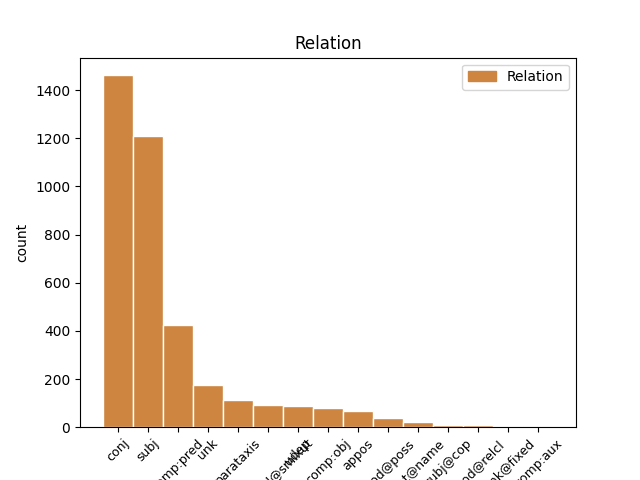
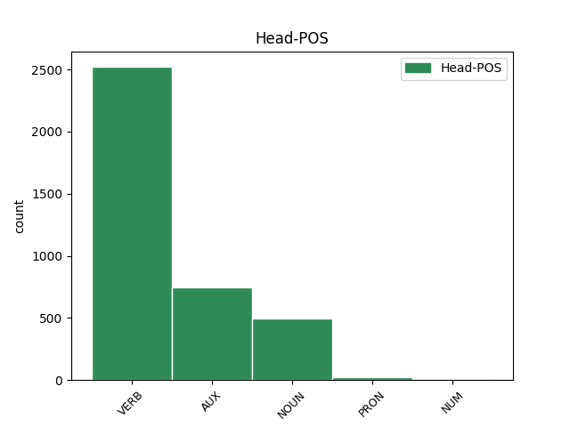
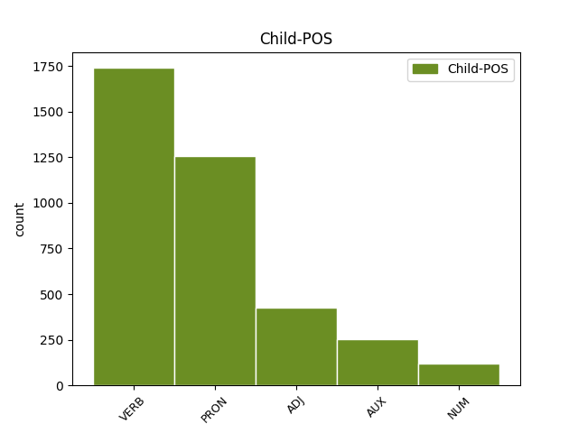

Distribution of features within this leaf



Agreement Rules sorted by frequency.
- When the dependent token is the conjunct(conj) of the head token, and the head token is VERB and the dependent token is VERB.
1 ל _ _ _ _ 0 _ _ _
2 גליל _ _ _ _ 0 _ _ _
3 לא _ _ _ _ 0 _ _ _
4 היתה _ _ _ _ 0 _ _ _
5 תשובה _ _ _ _ 0 _ _ _
6 ל _ _ _ _ 0 _ _ _
7 ה_ _ _ _ _ 0 _ _ _
8 יכולת _ _ _ _ 0 _ _ _
9 ה _ _ _ _ 0 _ _ _
10 אישית _ _ _ _ 0 _ _ _
11 ה _ _ _ _ 0 _ _ _
12 גבוהה _ _ _ _ 0 _ _ _
13 של _ _ _ _ 0 _ _ _
14 פירסון _ _ _ _ 0 _ _ _
15 , _ _ _ _ 0 _ _ _
16 ש _ _ _ _ 0 _ _ _
17 קלע קלע VERB VERB Gender=Masc|HebBinyan=PAAL|Number=Sing|Person=3|Tense=Past|Voice=Act 0 _ _ _
18 33 _ _ _ _ 0 _ _ _
19 נקודות _ _ _ _ 0 _ _ _
20 ו _ _ _ _ 0 _ _ _
21 ריכז ריכז VERB VERB Gender=Masc|HebBinyan=PIEL|Number=Sing|Person=3|Tense=Past|Voice=Act 17 conj _ _
22 את _ _ _ _ 0 _ _ _
23 משחק _ _ _ _ 0 _ _ _
24 קבוצה_ _ _ _ _ 0 _ _ _
25 _של_ _ _ _ _ 0 _ _ _
26 _הוא _ _ _ _ 0 _ _ _
27 במשך _ _ _ _ 0 _ _ _
28 דקות _ _ _ _ 0 _ _ _
29 רבות _ _ _ _ 0 _ _ _
30 . _ _ _ _ 0 _ _ _
1 מרגיז _ _ _ _ 0 _ _ _
2 את_ _ _ _ _ 0 _ _ _
3 _אני _ _ _ _ 0 _ _ _
4 , _ _ _ _ 0 _ _ _
5 כאשר _ _ _ _ 0 _ _ _
6 הופכים _ _ _ _ 0 _ _ _
7 את _ _ _ _ 0 _ _ _
8 שמעון _ _ _ _ 0 _ _ _
9 אמסלם _ _ _ _ 0 _ _ _
10 ל _ _ _ _ 0 _ _ _
11 אוהד _ _ _ _ 0 _ _ _
12 מן _ _ _ _ 0 _ _ _
13 ה _ _ _ _ 0 _ _ _
14 ספסל _ _ _ _ 0 _ _ _
15 , _ _ _ _ 0 _ _ _
16 ש _ _ _ _ 0 _ _ _
17 תפקיד_ _ _ _ _ 0 _ _ _
18 _של_ _ _ _ _ 0 _ _ _
19 _הוא _ _ _ _ 0 _ _ _
20 מצטמצם _ _ _ _ 0 _ _ _
21 ב _ _ _ _ 0 _ _ _
22 דקות _ _ _ _ 0 _ _ _
23 ספורות _ _ _ _ 0 _ _ _
24 על _ _ _ _ 0 _ _ _
25 ה _ _ _ _ 0 _ _ _
26 פארקט _ _ _ _ 0 _ _ _
27 , _ _ _ _ 0 _ _ _
28 ו _ _ _ _ 0 _ _ _
29 ב _ _ _ _ 0 _ _ _
30 מרבית _ _ _ _ 0 _ _ _
31 ה _ _ _ _ 0 _ _ _
32 זמן _ _ _ _ 0 _ _ _
33 הוא הוא PRON PRON Gender=Masc|Number=Sing|Person=3|PronType=Prs 34 subj _ _
34 מעודד עודד VERB VERB Gender=Masc|HebBinyan=PIEL|Number=Sing|Person=1,2,3|VerbForm=Part|Voice=Act 0 _ _ _
35 מן _ _ _ _ 0 _ _ _
36 ה _ _ _ _ 0 _ _ _
37 ספסל _ _ _ _ 0 _ _ _
38 את _ _ _ _ 0 _ _ _
39 חבר_ _ _ _ _ 0 _ _ _
40 _של_ _ _ _ _ 0 _ _ _
41 _הוא _ _ _ _ 0 _ _ _
42 . _ _ _ _ 0 _ _ _
1 מיקי _ _ _ _ 0 _ _ _
2 ברקוביץ _ _ _ _ 0 _ _ _
3 היה _ AUX AUX Gender=Masc|Number=Sing|Person=3|Polarity=Pos|Tense=Past|VerbType=Cop 0 _ _ _
4 נהדר נהדר ADJ ADJ Gender=Masc|Number=Sing 3 comp:pred _ _
5 ו _ _ _ _ 0 _ _ _
6 סחף _ _ _ _ 0 _ _ _
7 את _ _ _ _ 0 _ _ _
8 ראשון _ _ _ _ 0 _ _ _
9 ל _ _ _ _ 0 _ _ _
10 ציון _ _ _ _ 0 _ _ _
11 ל _ _ _ _ 0 _ _ _
12 ה_ _ _ _ _ 0 _ _ _
13 ניצחון _ _ _ _ 0 _ _ _
14 ה _ _ _ _ 0 _ _ _
15 גדול _ _ _ _ 0 _ _ _
16 . _ _ _ _ 0 _ _ _
1 אך _ _ _ _ 0 _ _ _
2 הוא הוא PRON PRON Gender=Masc|Number=Sing|Person=3|PronType=Prs 6 subj _ _
3 לבדו _ _ _ _ 0 _ _ _
4 לא _ _ _ _ 0 _ _ _
5 יכול _ _ _ _ 0 _ _ _
6 היה _ AUX AUX Gender=Masc|Number=Sing|Person=3|Polarity=Pos|Tense=Past|VerbType=Cop 0 _ _ _
7 לנצח _ _ _ _ 0 _ _ _
8 את _ _ _ _ 0 _ _ _
9 ה _ _ _ _ 0 _ _ _
10 משחק _ _ _ _ 0 _ _ _
11 . _ _ _ _ 0 _ _ _
1 זה זה PRON PRON Gender=Masc|Number=Sing|Person=3 8 subj _ SpaceAfter=No
2 , _ _ _ _ 0 _ _ _
3 ב _ _ _ _ 0 _ _ _
4 מחילה _ _ _ _ 0 _ _ _
5 , _ _ _ _ 0 _ _ _
6 לא _ _ _ _ 0 _ _ _
7 ה _ _ _ _ 0 _ _ _
8 פועל פועל NOUN NOUN Gender=Masc|Number=Sing 0 _ _ _
9 ו _ _ _ _ 0 _ _ _
10 לא _ _ _ _ 0 _ _ _
11 תל _ _ _ _ 0 _ _ _
12 אביב _ _ _ _ 0 _ _ _
13 . _ _ _ _ 0 _ _ _
1 ל _ _ _ _ 0 _ _ _
2 טענה_ _ _ _ _ 0 _ _ _
3 _של_ _ _ _ _ 0 _ _ _
4 _הן _ _ _ _ 0 _ _ _
5 , _ _ _ _ 0 _ _ _
6 ה _ _ _ _ 0 _ _ _
7 פיקוח _ _ _ _ 0 _ _ _
8 על _ _ _ _ 0 _ _ _
9 הובלת _ _ _ _ 0 _ _ _
10 ה _ _ _ _ 0 _ _ _
11 גז _ _ _ _ 0 _ _ _
12 מ _ _ _ _ 0 _ _ _
13 ה _ _ _ _ 0 _ _ _
14 שטחים _ _ _ _ 0 _ _ _
15 ל _ _ _ _ 0 _ _ _
16 תחומי _ _ _ _ 0 _ _ _
17 ה _ _ _ _ 0 _ _ _
18 קו _ _ _ _ 0 _ _ _
19 ה _ _ _ _ 0 _ _ _
20 ירוק _ _ _ _ 0 _ _ _
21 הוא הוא AUX AUX Gender=Masc|Number=Sing|Person=3|Polarity=Pos|VerbForm=Part|VerbType=Cop 0 _ _ _
22 ממילא _ _ _ _ 0 _ _ _
23 לוקה לקה VERB VERB Gender=Masc|HebBinyan=PAAL|Number=Sing|Person=1,2,3|VerbForm=Part|Voice=Act 21 comp:pred _ _
24 ב _ _ _ _ 0 _ _ _
25 חסר _ _ _ _ 0 _ _ _
26 , _ _ _ _ 0 _ _ _
27 ו _ _ _ _ 0 _ _ _
28 הקמת _ _ _ _ 0 _ _ _
29 תחנות _ _ _ _ 0 _ _ _
30 ה _ _ _ _ 0 _ _ _
31 מילוי _ _ _ _ 0 _ _ _
32 ה _ _ _ _ 0 _ _ _
33 חדשות _ _ _ _ 0 _ _ _
34 רק _ _ _ _ 0 _ _ _
35 תחריף _ _ _ _ 0 _ _ _
36 את _ _ _ _ 0 _ _ _
37 ה _ _ _ _ 0 _ _ _
38 מצב _ _ _ _ 0 _ _ _
39 . _ _ _ _ 0 _ _ _
1 ה _ _ _ _ 0 _ _ _
2 שער _ _ _ _ 0 _ _ _
3 של _ _ _ _ 0 _ _ _
4 ויאלי _ _ _ _ 0 _ _ _
5 ש _ _ _ _ 0 _ _ _
6 נבע _ _ _ _ 0 _ _ _
7 מ _ _ _ _ 0 _ _ _
8 טעות _ _ _ _ 0 _ _ _
9 שוער _ _ _ _ 0 _ _ _
10 , _ _ _ _ 0 _ _ _
11 הובקע הובקע VERB VERB Gender=Masc|HebBinyan=HUFAL|Number=Sing|Person=3|Tense=Past|Voice=Pass 0 _ _ _
12 12 _ _ _ _ 0 _ _ _
13 דקות _ _ _ _ 0 _ _ _
14 אחר _ _ _ _ 0 _ _ _
15 - _ _ _ _ 0 _ _ _
16 כך _ _ _ _ 0 _ _ _
17 ו _ _ _ _ 0 _ _ _
18 ה _ _ _ _ 0 _ _ _
19 - _ _ _ _ 0 _ _ _
20 04 _ _ _ _ 0 _ _ _
21 היה _ AUX AUX Gender=Masc|Number=Sing|Person=3|Polarity=Pos|Tense=Past|VerbType=Cop 11 conj _ _
22 ב _ _ _ _ 0 _ _ _
23 בעיטת _ _ _ _ 0 _ _ _
24 11 _ _ _ _ 0 _ _ _
25 של _ _ _ _ 0 _ _ _
26 מארקו _ _ _ _ 0 _ _ _
27 בראנקה _ _ _ _ 0 _ _ _
28 . _ _ _ _ 0 _ _ _
1 מיקי _ _ _ _ 0 _ _ _
2 ברקוביץ _ _ _ _ 0 _ _ _
3 היה _ AUX AUX Gender=Masc|Number=Sing|Person=3|Polarity=Pos|Tense=Past|VerbType=Cop 0 _ _ _
4 נהדר _ _ _ _ 0 _ _ _
5 ו _ _ _ _ 0 _ _ _
6 סחף סחף VERB VERB Gender=Masc|HebBinyan=PAAL|Number=Sing|Person=3|Tense=Past|Voice=Act 3 conj _ _
7 את _ _ _ _ 0 _ _ _
8 ראשון _ _ _ _ 0 _ _ _
9 ל _ _ _ _ 0 _ _ _
10 ציון _ _ _ _ 0 _ _ _
11 ל _ _ _ _ 0 _ _ _
12 ה_ _ _ _ _ 0 _ _ _
13 ניצחון _ _ _ _ 0 _ _ _
14 ה _ _ _ _ 0 _ _ _
15 גדול _ _ _ _ 0 _ _ _
16 . _ _ _ _ 0 _ _ _
1 אך _ _ _ _ 0 _ _ _
2 הוא _ _ _ _ 0 _ _ _
3 לבדו _ _ _ _ 0 _ _ _
4 לא _ _ _ _ 0 _ _ _
5 יכול _ AUX AUX Gender=Masc|Number=Sing|Person=1,2,3|VerbForm=Part|VerbType=Mod 6 comp:pred _ _
6 היה _ AUX AUX Gender=Masc|Number=Sing|Person=3|Polarity=Pos|Tense=Past|VerbType=Cop 0 _ _ _
7 לנצח _ _ _ _ 0 _ _ _
8 את _ _ _ _ 0 _ _ _
9 ה _ _ _ _ 0 _ _ _
10 משחק _ _ _ _ 0 _ _ _
11 . _ _ _ _ 0 _ _ _
1 בראגה _ _ _ _ 0 _ _ _
2 , _ _ _ _ 0 _ _ _
3 אל_ _ _ _ _ 0 _ _ _
4 _היא _ _ _ _ 0 _ _ _
5 הצטרף _ _ _ _ 0 _ _ _
6 אלי _ _ _ _ 0 _ _ _
7 אוחנה _ _ _ _ 0 _ _ _
8 , _ _ _ _ 0 _ _ _
9 נוצחה _ _ _ _ 0 _ _ _
10 אתמול _ _ _ _ 0 _ _ _
11 0 _ _ _ _ 0 _ _ _
12 3 _ _ _ _ 0 _ _ _
13 ב _ _ _ _ 0 _ _ _
14 ה_ _ _ _ _ 0 _ _ _
15 חוץ _ _ _ _ 0 _ _ _
16 בידי _ _ _ _ 0 _ _ _
17 ספורטינג _ _ _ _ 0 _ _ _
18 ליסבון _ _ _ _ 0 _ _ _
19 ה _ _ _ _ 0 _ _ _
20 מדורגת דורג VERB VERB Gender=Fem|HebBinyan=PUAL|Number=Sing|Person=1,2,3|VerbForm=Part|Voice=Pass 0 _ _ _
21 ראשונה _ ADJ ADJ Gender=Fem|Number=Sing 20 comp:pred _ SpaceAfter=No
22 . _ _ _ _ 0 _ _ _
1 התחייבתי _ _ _ _ 0 _ _ _
2 ש _ _ _ _ 0 _ _ _
3 ה _ _ _ _ 0 _ _ _
4 קצב _ _ _ _ 0 _ _ _
5 ה _ _ _ _ 0 _ _ _
6 שבועי _ _ _ _ 0 _ _ _
7 של _ _ _ _ 0 _ _ _
8 ה _ _ _ _ 0 _ _ _
9 ניתוחים _ _ _ _ 0 _ _ _
10 ב _ _ _ _ 0 _ _ _
11 בית בית NOUN NOUN Definite=Cons|Gender=Masc|Number=Sing 0 _ _ _
12 ה _ _ _ _ 0 _ _ _
13 חולים חלה VERB VERB Gender=Masc|HebBinyan=PAAL|Number=Plur|Person=1,2,3|VerbForm=Part|Voice=Act 11 compound@smixut _ _
14 כרמל _ _ _ _ 0 _ _ _
15 יישאר _ _ _ _ 0 _ _ _
16 ב _ _ _ _ 0 _ _ _
17 רמה_ _ _ _ _ 0 _ _ _
18 _של_ _ _ _ _ 0 _ _ _
19 _הוא _ _ _ _ 0 _ _ _
20 ו _ _ _ _ 0 _ _ _
21 אף _ _ _ _ 0 _ _ _
22 יגדל _ _ _ _ 0 _ _ _
23 . _ _ _ _ 0 _ _ _
1 ב _ _ _ _ 0 _ _ _
2 חלק_ _ _ _ _ 0 _ _ _
3 _של_ _ _ _ _ 0 _ _ _
4 _הם _ _ _ _ 0 _ _ _
5 , _ _ _ _ 0 _ _ _
6 אמר אמר VERB VERB Gender=Masc|HebBinyan=PAAL|Number=Sing|Person=3|Tense=Past|Voice=Act 8 parataxis _ SpaceAfter=No
7 , _ _ _ _ 0 _ _ _
8 מדובר דובר VERB VERB Gender=Masc|HebBinyan=PUAL|Number=Sing|Person=1,2,3|VerbForm=Part|Voice=Pass 0 _ _ _
9 ב _ _ _ _ 0 _ _ _
10 רצח _ _ _ _ 0 _ _ _
11 על _ _ _ _ 0 _ _ _
12 רקע _ _ _ _ 0 _ _ _
13 פלילי _ _ _ _ 0 _ _ _
14 . _ _ _ _ 0 _ _ _
1 מה _ _ _ _ 0 _ _ _
2 ש _ _ _ _ 0 _ _ _
3 אמור _ _ _ _ 0 _ _ _
4 היה _ _ _ _ 0 _ _ _
5 להיות _ _ _ _ 0 _ _ _
6 מאבק _ _ _ _ 0 _ _ _
7 צמרת _ _ _ _ 0 _ _ _
8 שקול _ _ _ _ 0 _ _ _
9 , _ _ _ _ 0 _ _ _
10 הפך _ _ _ _ 0 _ _ _
11 במהרה _ _ _ _ 0 _ _ _
12 ל _ _ _ _ 0 _ _ _
13 מיפגן _ _ _ _ 0 _ _ _
14 חד _ _ _ _ 0 _ _ _
15 - _ _ _ _ 0 _ _ _
16 סיטרי _ _ _ _ 0 _ _ _
17 , _ _ _ _ 0 _ _ _
18 בעקבות _ _ _ _ 0 _ _ _
19 משחק _ _ _ _ 0 _ _ _
20 שובה _ VERB VERB Definite=Cons|Gender=Masc|HebBinyan=PAAL|Number=Sing|Person=1,2,3|VerbForm=Part|Voice=Act 0 _ _ _
21 עין _ _ _ _ 0 _ _ _
22 ו _ _ _ _ 0 _ _ _
23 תכליתי תכליתי ADJ ADJ Gender=Masc|Number=Sing 20 conj _ _
24 של _ _ _ _ 0 _ _ _
25 מכבי _ _ _ _ 0 _ _ _
26 ראשל"ץ _ _ _ _ 0 _ _ _
27 ש _ _ _ _ 0 _ _ _
28 ניצח _ _ _ _ 0 _ _ _
29 ללא _ _ _ _ 0 _ _ _
30 מאמץ _ _ _ _ 0 _ _ _
31 09 _ _ _ _ 0 _ _ _
32 931 _ _ _ _ 0 _ _ _
33 . _ _ _ _ 0 _ _ _
1 דוגמה דוגמה NOUN NOUN Gender=Fem|Number=Sing 0 _ _ _
2 אחרת אחר ADJ ADJ Gender=Fem|Number=Sing 1 unk _ SpaceAfter=No
3 : _ _ _ _ 0 _ _ _
4 איש _ _ _ _ 0 _ _ _
5 עסקים _ _ _ _ 0 _ _ _
6 שכר _ _ _ _ 0 _ _ _
7 דירה _ _ _ _ 0 _ _ _
8 בת _ _ _ _ 0 _ _ _
9 5 _ _ _ _ 0 _ _ _
10 חדרים _ _ _ _ 0 _ _ _
11 ב _ _ _ _ 0 _ _ _
12 שטח _ _ _ _ 0 _ _ _
13 של _ _ _ _ 0 _ _ _
14 165 _ _ _ _ 0 _ _ _
15 מ"ר _ _ _ _ 0 _ _ _
16 תמורת _ _ _ _ 0 _ _ _
17 כ _ _ _ _ 0 _ _ _
18 900 _ _ _ _ 0 _ _ _
19 דולר _ _ _ _ 0 _ _ _
20 ב _ _ _ _ 0 _ _ _
21 רחוב _ _ _ _ 0 _ _ _
22 רב _ _ _ _ 0 _ _ _
23 אשי _ _ _ _ 0 _ _ _
24 ב _ _ _ _ 0 _ _ _
25 נווה _ _ _ _ 0 _ _ _
26 - _ _ _ _ 0 _ _ _
27 אביבים _ _ _ _ 0 _ _ _
28 . _ _ _ _ 0 _ _ _
1 ה _ _ _ _ 0 _ _ _
2 משטרה _ _ _ _ 0 _ _ _
3 נעזרה _ _ _ _ 0 _ _ _
4 ב _ _ _ _ 0 _ _ _
5 צינורות _ _ _ _ 0 _ _ _
6 מים _ _ _ _ 0 _ _ _
7 , _ _ _ _ 0 _ _ _
8 ב _ _ _ _ 0 _ _ _
9 כלבים _ _ _ _ 0 _ _ _
10 ו _ _ _ _ 0 _ _ _
11 ב _ _ _ _ 0 _ _ _
12 גז _ _ _ _ 0 _ _ _
13 מדמיע _ _ _ _ 0 _ _ _
14 כדי _ _ _ _ 0 _ _ _
15 לפזר _ _ _ _ 0 _ _ _
16 יותר _ _ _ _ 0 _ _ _
17 מ _ _ _ _ 0 _ _ _
18 - _ _ _ _ 0 _ _ _
19 150 _ _ _ _ 0 _ _ _
20 איש _ _ _ _ 0 _ _ _
21 , _ _ _ _ 0 _ _ _
22 רבים רב VERB VERB Gender=Masc|HebBinyan=PAAL|Number=Plur|Person=1,2,3|VerbForm=Part|Voice=Act 25 subj _ _
23 מהם _ _ _ _ 0 _ _ _
24 _הם _ _ _ _ 0 _ _ _
25 עוטי עטה VERB VERB Definite=Cons|Gender=Masc|HebBinyan=PAAL|Number=Plur|Person=1,2,3|VerbForm=Part|Voice=Act 0 _ _ _
26 מסיכות _ _ _ _ 0 _ _ _
27 , _ _ _ _ 0 _ _ _
28 ש _ _ _ _ 0 _ _ _
29 התפרעו _ _ _ _ 0 _ _ _
30 ב _ _ _ _ 0 _ _ _
31 שבת _ _ _ _ 0 _ _ _
32 ב _ _ _ _ 0 _ _ _
33 ה_ _ _ _ _ 0 _ _ _
34 עיר _ _ _ _ 0 _ _ _
35 מאגדבורג _ _ _ _ 0 _ _ _
36 , _ _ _ _ 0 _ _ _
37 סיפר _ _ _ _ 0 _ _ _
38 דובר _ _ _ _ 0 _ _ _
39 ה _ _ _ _ 0 _ _ _
40 משטרה _ _ _ _ 0 _ _ _
41 , _ _ _ _ 0 _ _ _
42 יורגן _ _ _ _ 0 _ _ _
43 ויינר _ _ _ _ 0 _ _ _
44 . _ _ _ _ 0 _ _ _
1 אנו _ _ _ _ 0 _ _ _
2 כולנו כול NOUN NOUN Gender=Masc|Number=Sing 0 _ _ _
3 _הם הוא PRON PRON Case=Gen|Gender=Masc|Number=Plur|Person=3|PronType=Prs 2 mod@poss _ _
4 מוכנים _ _ _ _ 0 _ _ _
5 להילחם _ _ _ _ 0 _ _ _
6 ו _ _ _ _ 0 _ _ _
7 למות _ _ _ _ 0 _ _ _
8 למען _ _ _ _ 0 _ _ _
9 אללה _ _ _ _ 0 _ _ _
10 ו _ _ _ _ 0 _ _ _
11 למען _ _ _ _ 0 _ _ _
12 ארץ_ _ _ _ _ 0 _ _ _
13 _של_ _ _ _ _ 0 _ _ _
14 _אנחנו _ _ _ _ 0 _ _ _
15 " _ _ _ _ 0 _ _ _
16 , _ _ _ _ 0 _ _ _
17 אמר _ _ _ _ 0 _ _ _
18 קולונל _ _ _ _ 0 _ _ _
19 סידי _ _ _ _ 0 _ _ _
20 סאלח _ _ _ _ 0 _ _ _
21 א _ _ _ _ 0 _ _ _
22 - _ _ _ _ 0 _ _ _
23 שמיירי _ _ _ _ 0 _ _ _
24 , _ _ _ _ 0 _ _ _
25 קצין _ _ _ _ 0 _ _ _
26 ה _ _ _ _ 0 _ _ _
27 צבא _ _ _ _ 0 _ _ _
28 ה _ _ _ _ 0 _ _ _
29 כווייתי _ _ _ _ 0 _ _ _
30 ה _ _ _ _ 0 _ _ _
31 מופקד _ _ _ _ 0 _ _ _
32 על _ _ _ _ 0 _ _ _
33 אימוני _ _ _ _ 0 _ _ _
34 ה _ _ _ _ 0 _ _ _
35 מתנדבים _ _ _ _ 0 _ _ _
36 . _ _ _ _ 0 _ _ _
1 אמש _ _ _ _ 0 _ _ _
2 ב _ _ _ _ 0 _ _ _
3 אוסישקין _ _ _ _ 0 _ _ _
4 הרגשתי הרגיש VERB VERB Gender=Fem,Masc|HebBinyan=HIFIL|Number=Sing|Person=1|Tense=Past|Voice=Act 0 _ _ _
5 כאילו _ _ _ _ 0 _ _ _
6 חזרנו חזר VERB VERB Gender=Fem,Masc|Number=Plur|Person=1|Tense=Past 4 udep _ _
7 ל _ _ _ _ 0 _ _ _
8 סאברס _ _ _ _ 0 _ _ _
9 . _ _ _ _ 0 _ _ _
1 מרגיז _ _ _ _ 0 _ _ _
2 את_ _ _ _ _ 0 _ _ _
3 _אני _ _ _ _ 0 _ _ _
4 , _ _ _ _ 0 _ _ _
5 כאשר _ _ _ _ 0 _ _ _
6 אני _ _ _ _ 0 _ _ _
7 רואה _ VERB VERB Gender=Masc|HebBinyan=PAAL|Number=Sing|Person=1,2,3|VerbForm=Part|Voice=Act 0 _ _ _
8 את _ _ _ _ 0 _ _ _
9 ניר _ _ _ _ 0 _ _ _
10 ריכליס _ _ _ _ 0 _ _ _
11 עולה _ VERB VERB Gender=Masc|HebBinyan=PAAL|HebSource=ConvUncertainHead|Number=Sing|Person=1,2,3|VerbForm=Part|Voice=Act 7 unk _ _
12 ל _ _ _ _ 0 _ _ _
13 כמה _ _ _ _ 0 _ _ _
14 דקות _ _ _ _ 0 _ _ _
15 , _ _ _ _ 0 _ _ _
16 עושה _ _ _ _ 0 _ _ _
17 שגיאה _ _ _ _ 0 _ _ _
18 , _ _ _ _ 0 _ _ _
19 ו _ _ _ _ 0 _ _ _
20 מיד _ _ _ _ 0 _ _ _
21 יורד _ _ _ _ 0 _ _ _
22 ל _ _ _ _ 0 _ _ _
23 ה_ _ _ _ _ 0 _ _ _
24 ספסל _ _ _ _ 0 _ _ _
25 . _ _ _ _ 0 _ _ _
1 וולסטון _ _ _ _ 0 _ _ _
2 הוסיף _ _ _ _ 0 _ _ _
3 : _ _ _ _ 0 _ _ _
4 " _ _ _ _ 0 _ _ _
5 ב _ _ _ _ 0 _ _ _
6 אותה _ _ _ _ 0 _ _ _
7 מידה _ _ _ _ 0 _ _ _
8 , _ _ _ _ 0 _ _ _
9 מתוך _ _ _ _ 0 _ _ _
10 אהבת _ _ _ _ 0 _ _ _
11 ישראל _ _ _ _ 0 _ _ _
12 , _ _ _ _ 0 _ _ _
13 יכול _ AUX AUX Gender=Masc|Number=Sing|Person=1,2,3|VerbForm=Part|VerbType=Mod 0 _ _ _
14 אדם _ _ _ _ 0 _ _ _
15 להיות _ _ _ _ 0 _ _ _
16 ביקורתי ביקורתי ADJ ADJ Gender=Masc|Number=Sing 13 udep _ _
17 כלפי _ _ _ _ 0 _ _ _
18 ממשלה _ _ _ _ 0 _ _ _
19 מסוימת _ _ _ _ 0 _ _ _
20 ו _ _ _ _ 0 _ _ _
21 אני _ _ _ _ 0 _ _ _
22 אמנם _ _ _ _ 0 _ _ _
23 הייתי _ _ _ _ 0 _ _ _
24 ביקורתי _ _ _ _ 0 _ _ _
25 על _ _ _ _ 0 _ _ _
26 מפלגת _ _ _ _ 0 _ _ _
27 ה _ _ _ _ 0 _ _ _
28 ליכוד _ _ _ _ 0 _ _ _
29 ב _ _ _ _ 0 _ _ _
30 ישראל _ _ _ _ 0 _ _ _
31 , _ _ _ _ 0 _ _ _
32 ש _ _ _ _ 0 _ _ _
33 אותו_ _ _ _ _ 0 _ _ _
34 _היא _ _ _ _ 0 _ _ _
35 אני _ _ _ _ 0 _ _ _
36 חושב _ _ _ _ 0 _ _ _
37 ל _ _ _ _ 0 _ _ _
38 ממשלה _ _ _ _ 0 _ _ _
39 ימנית _ _ _ _ 0 _ _ _
40 . _ _ _ _ 0 _ _ _
1 דוברת _ _ _ _ 0 _ _ _
2 קופת _ _ _ _ 0 _ _ _
3 חולים _ _ _ _ 0 _ _ _
4 ב _ _ _ _ 0 _ _ _
5 חיפה _ _ _ _ 0 _ _ _
6 ו _ _ _ _ 0 _ _ _
7 ה _ _ _ _ 0 _ _ _
8 צפון _ _ _ _ 0 _ _ _
9 יוכי _ _ _ _ 0 _ _ _
10 באואר _ _ _ _ 0 _ _ _
11 מסרה _ _ _ _ 0 _ _ _
12 כי _ _ _ _ 0 _ _ _
13 קופת קופה NOUN NOUN Definite=Cons|Gender=Fem|Number=Sing 0 _ _ _
14 חולים _ _ _ _ 0 _ _ _
15 ה _ _ _ _ 0 _ _ _
16 כללית כללי ADJ ADJ Gender=Fem|Number=Sing 13 appos _ _
17 פיטרה _ _ _ _ 0 _ _ _
18 את _ _ _ _ 0 _ _ _
19 פרוף _ _ _ _ 0 _ _ _
20 מרין _ _ _ _ 0 _ _ _
21 מכיוון _ _ _ _ 0 _ _ _
22 ש _ _ _ _ 0 _ _ _
23 ביצע _ _ _ _ 0 _ _ _
24 ניתוחים _ _ _ _ 0 _ _ _
25 פרטיים _ _ _ _ 0 _ _ _
26 בניגוד _ _ _ _ 0 _ _ _
27 ל _ _ _ _ 0 _ _ _
28 הסכם _ _ _ _ 0 _ _ _
29 מפורש _ _ _ _ 0 _ _ _
30 עם_ _ _ _ _ 0 _ _ _
31 _הוא _ _ _ _ 0 _ _ _
32 . _ _ _ _ 0 _ _ _
1 הם _ _ _ _ 0 _ _ _
2 היו _ _ _ _ 0 _ _ _
3 פצועים _ _ _ _ 0 _ _ _
4 כבר _ _ _ _ 0 _ _ _
5 ב _ _ _ _ 0 _ _ _
6 ה_ _ _ _ _ 0 _ _ _
7 שבוע _ _ _ _ 0 _ _ _
8 ש _ _ _ _ 0 _ _ _
9 עבר _ _ _ _ 0 _ _ _
10 , _ _ _ _ 0 _ _ _
11 אך _ _ _ _ 0 _ _ _
12 שיחקו _ _ _ _ 0 _ _ _
13 ב _ _ _ _ 0 _ _ _
14 סוף _ _ _ _ 0 _ _ _
15 ה _ _ _ _ 0 _ _ _
16 שבוע _ _ _ _ 0 _ _ _
17 ו _ _ _ _ 0 _ _ _
18 אף _ _ _ _ 0 _ _ _
19 אחד אחד NUM NUM Gender=Masc|Number=Sing 24 subj _ _
20 מ _ _ _ _ 0 _ _ _
21 ה _ _ _ _ 0 _ _ _
22 שלושה _ _ _ _ 0 _ _ _
23 לא _ _ _ _ 0 _ _ _
24 סיים סיים VERB VERB Gender=Masc|HebBinyan=PIEL|Number=Sing|Person=3|Tense=Past|Voice=Act 0 _ _ _
25 את _ _ _ _ 0 _ _ _
26 ה _ _ _ _ 0 _ _ _
27 משחק _ _ _ _ 0 _ _ _
28 " _ _ _ _ 0 _ _ _
29 , _ _ _ _ 0 _ _ _
30 אמר _ _ _ _ 0 _ _ _
31 גדעון _ _ _ _ 0 _ _ _
32 כהן _ _ _ _ 0 _ _ _
33 . _ _ _ _ 0 _ _ _
1 הגיע הגיע VERB VERB Gender=Masc|HebBinyan=HIFIL|Number=Sing|Person=3|Tense=Past|Voice=Act 10 comp:obj _ _
2 ה _ _ _ _ 0 _ _ _
3 זמן _ _ _ _ 0 _ _ _
4 להתגייס _ _ _ _ 0 _ _ _
5 ל _ _ _ _ 0 _ _ _
6 ה_ _ _ _ _ 0 _ _ _
7 צבא _ _ _ _ 0 _ _ _
8 " _ _ _ _ 0 _ _ _
9 , _ _ _ _ 0 _ _ _
10 נאמר נאמר VERB VERB Gender=Masc|HebBinyan=NIFAL|Number=Sing|Person=3|Tense=Past|Voice=Mid 0 _ _ _
11 ב _ _ _ _ 0 _ _ _
12 אחד _ _ _ _ 0 _ _ _
13 ה _ _ _ _ 0 _ _ _
14 שירים _ _ _ _ 0 _ _ _
15 . _ _ _ _ 0 _ _ _
1 ה _ _ _ _ 0 _ _ _
2 סיוע _ _ _ _ 0 _ _ _
3 ל _ _ _ _ 0 _ _ _
4 ה_ _ _ _ _ 0 _ _ _
5 סטודנט _ _ _ _ 0 _ _ _
6 צריך צריך AUX AUX Gender=Masc|Number=Sing|Person=1,2,3|VerbType=Mod 0 _ _ _
7 להיות _ _ _ _ 0 _ _ _
8 ישיר _ _ _ _ 0 _ _ _
9 ו _ _ _ _ 0 _ _ _
10 נפרד _ _ _ _ 0 _ _ _
11 לחלוטין _ _ _ _ 0 _ _ _
12 מ _ _ _ _ 0 _ _ _
13 ה _ _ _ _ 0 _ _ _
14 סיוע _ _ _ _ 0 _ _ _
15 ל _ _ _ _ 0 _ _ _
16 ה_ _ _ _ _ 0 _ _ _
17 אוניברסיטה _ _ _ _ 0 _ _ _
18 , _ _ _ _ 0 _ _ _
19 ו _ _ _ _ 0 _ _ _
20 הוא _ _ _ _ 0 _ _ _
21 צריך צריך AUX AUX Gender=Masc|Number=Sing|Person=1,2,3|VerbType=Mod 6 conj _ _
22 להינתן _ _ _ _ 0 _ _ _
23 ל _ _ _ _ 0 _ _ _
24 כל _ _ _ _ 0 _ _ _
25 ציבור _ _ _ _ 0 _ _ _
26 ה _ _ _ _ 0 _ _ _
27 סטודנטים _ _ _ _ 0 _ _ _
28 ב _ _ _ _ 0 _ _ _
29 ה_ _ _ _ _ 0 _ _ _
30 ארץ _ _ _ _ 0 _ _ _
31 , _ _ _ _ 0 _ _ _
32 בלי _ _ _ _ 0 _ _ _
33 שים _ _ _ _ 0 _ _ _
34 לב _ _ _ _ 0 _ _ _
35 ל _ _ _ _ 0 _ _ _
36 ה_ _ _ _ _ 0 _ _ _
37 מוסד _ _ _ _ 0 _ _ _
38 ב_ _ _ _ _ 0 _ _ _
39 _הוא _ _ _ _ 0 _ _ _
40 הם _ _ _ _ 0 _ _ _
41 לומדים _ _ _ _ 0 _ _ _
42 . _ _ _ _ 0 _ _ _
1 ב _ _ _ _ 0 _ _ _
2 ליל _ _ _ _ 0 _ _ _
3 שבת _ _ _ _ 0 _ _ _
4 הגיעו _ _ _ _ 0 _ _ _
5 ל _ _ _ _ 0 _ _ _
6 ה_ _ _ _ _ 0 _ _ _
7 מלון _ _ _ _ 0 _ _ _
8 חוקרים _ _ _ _ 0 _ _ _
9 , _ _ _ _ 0 _ _ _
10 ב _ _ _ _ 0 _ _ _
11 ראשות _ _ _ _ 0 _ _ _
12 חוקרת _ _ _ _ 0 _ _ _
13 ב _ _ _ _ 0 _ _ _
14 דרגת _ _ _ _ 0 _ _ _
15 פקד _ _ _ _ 0 _ _ _
16 , _ _ _ _ 0 _ _ _
17 ו _ _ _ _ 0 _ _ _
18 החלו _ _ _ _ 0 _ _ _
19 ב _ _ _ _ 0 _ _ _
20 תחקור _ _ _ _ 0 _ _ _
21 ה _ _ _ _ 0 _ _ _
22 עובדים עובד NOUN NOUN Gender=Masc|Number=Plur 0 _ _ _
23 , _ _ _ _ 0 _ _ _
24 כולל כלל VERB VERB Gender=Masc|HebBinyan=PAAL|Number=Sing|Person=1,2,3|VerbForm=Part|Voice=Act 22 appos _ _
25 ה _ _ _ _ 0 _ _ _
26 פועלים _ _ _ _ 0 _ _ _
27 ה _ _ _ _ 0 _ _ _
28 ערבים _ _ _ _ 0 _ _ _
29 . _ _ _ _ 0 _ _ _
1 אחרים אחר ADJ ADJ Gender=Masc|Number=Plur 8 subj _ _
2 ב _ _ _ _ 0 _ _ _
3 ה_ _ _ _ _ 0 _ _ _
4 תנועה _ _ _ _ 0 _ _ _
5 ה _ _ _ _ 0 _ _ _
6 קיבוצית _ _ _ _ 0 _ _ _
7 אינם _ _ _ _ 0 _ _ _
8 מאמינים האמין VERB VERB Gender=Masc|HebBinyan=HIFIL|Number=Plur|Person=1,2,3|VerbForm=Part|Voice=Act 0 _ _ _
9 ב _ _ _ _ 0 _ _ _
10 כוח_ _ _ _ _ 0 _ _ _
11 _של_ _ _ _ _ 0 _ _ _
12 _הם _ _ _ _ 0 _ _ _
13 להביא _ _ _ _ 0 _ _ _
14 אל_ _ _ _ _ 0 _ _ _
15 _הם _ _ _ _ 0 _ _ _
16 עולים _ _ _ _ 0 _ _ _
17 מ _ _ _ _ 0 _ _ _
18 רצון _ _ _ _ 0 _ _ _
19 . _ _ _ _ 0 _ _ _
1 רבים רב VERB VERB Gender=Masc|HebBinyan=PAAL|Number=Plur|Person=1,2,3|VerbForm=Part|Voice=Act 0 _ _ _
2 מהם _ _ _ _ 0 _ _ _
3 _הם הוא PRON PRON Gender=Masc|HebSource=ConvUncertainHead|Number=Plur|Person=3|PronType=Prs 1 unk _ _
4 חשו _ _ _ _ 0 _ _ _
5 להתנדב _ _ _ _ 0 _ _ _
6 ב _ _ _ _ 0 _ _ _
7 שגרירויות _ _ _ _ 0 _ _ _
8 כוויית _ _ _ _ 0 _ _ _
9 ב _ _ _ _ 0 _ _ _
10 רחבי _ _ _ _ 0 _ _ _
11 ה _ _ _ _ 0 _ _ _
12 עולם _ _ _ _ 0 _ _ _
13 ו _ _ _ _ 0 _ _ _
14 שילמו _ _ _ _ 0 _ _ _
15 בעד _ _ _ _ 0 _ _ _
16 נסיעה_ _ _ _ _ 0 _ _ _
17 _של_ _ _ _ _ 0 _ _ _
18 _הם _ _ _ _ 0 _ _ _
19 ל _ _ _ _ 0 _ _ _
20 מחנות _ _ _ _ 0 _ _ _
21 ה _ _ _ _ 0 _ _ _
22 אימונים _ _ _ _ 0 _ _ _
23 של_ _ _ _ _ 0 _ _ _
24 _הם _ _ _ _ 0 _ _ _
25 . _ _ _ _ 0 _ _ _
1 זו _ _ _ _ 0 _ _ _
2 פעם _ _ _ _ 0 _ _ _
3 שניה _ _ _ _ 0 _ _ _
4 ש _ _ _ _ 0 _ _ _
5 מכבי כיבה VERB VERB Definite=Cons|Gender=Masc|HebBinyan=PIEL|Number=Plur|Person=1,2,3|VerbForm=Part|Voice=Act 7 unk _ _
6 תל _ _ _ _ 0 _ _ _
7 אביב אביב NOUN NOUN Gender=Masc|Number=Sing 0 _ _ _
8 הפסיד _ _ _ _ 0 _ _ _
9 את _ _ _ _ 0 _ _ _
10 בריאנט _ _ _ _ 0 _ _ _
11 ב _ _ _ _ 0 _ _ _
12 מירוץ _ _ _ _ 0 _ _ _
13 עם _ _ _ _ 0 _ _ _
14 קבוצה _ _ _ _ 0 _ _ _
15 איטלקית _ _ _ _ 0 _ _ _
16 . _ _ _ _ 0 _ _ _
1 בן בן NOUN NOUN Definite=Cons|Gender=Masc|Number=Sing 0 _ _ _
2 36 _ _ _ _ 0 _ _ _
3 ו _ _ _ _ 0 _ _ _
4 שם שם VERB VERB Gender=Masc|HebBinyan=PAAL|Number=Sing|Person=3|Tense=Past|Voice=Act 1 conj _ _
5 ב _ _ _ _ 0 _ _ _
6 ה_ _ _ _ _ 0 _ _ _
7 כיס _ _ _ _ 0 _ _ _
8 כמה _ _ _ _ 0 _ _ _
9 צעירים _ _ _ _ 0 _ _ _
10 . _ _ _ _ 0 _ _ _
1 כ _ _ _ _ 0 _ _ _
2 אלף _ _ _ _ 0 _ _ _
3 אוהדי _ _ _ _ 0 _ _ _
4 כדורגל _ _ _ _ 0 _ _ _
5 ה _ _ _ _ 0 _ _ _
6 מכנים כינה VERB VERB Gender=Masc|HebBinyan=PIEL|Number=Plur|Person=1,2,3|VerbForm=Part|Voice=Act 0 _ _ _
7 עצמם עצמו PRON PRON Gender=Masc|Number=Plur|Person=3|PronType=Prs|Reflex=Yes 6 comp:obj _ _
8 " _ _ _ _ 0 _ _ _
9 בועטים _ _ _ _ 0 _ _ _
10 - _ _ _ _ 0 _ _ _
11 חוליגאנים _ _ _ _ 0 _ _ _
12 " _ _ _ _ 0 _ _ _
13 קיימו _ _ _ _ 0 _ _ _
14 ב _ _ _ _ 0 _ _ _
15 שבת _ _ _ _ 0 _ _ _
16 ב _ _ _ _ 0 _ _ _
17 ברלין _ _ _ _ 0 _ _ _
18 צעדה _ _ _ _ 0 _ _ _
19 ל _ _ _ _ 0 _ _ _
20 זכר _ _ _ _ 0 _ _ _
21 צעיר _ _ _ _ 0 _ _ _
22 בן _ _ _ _ 0 _ _ _
23 18 _ _ _ _ 0 _ _ _
24 ש _ _ _ _ 0 _ _ _
25 נורה _ _ _ _ 0 _ _ _
26 לפני _ _ _ _ 0 _ _ _
27 שבוע _ _ _ _ 0 _ _ _
28 ל _ _ _ _ 0 _ _ _
29 ה_ _ _ _ _ 0 _ _ _
30 מוות _ _ _ _ 0 _ _ _
31 ב _ _ _ _ 0 _ _ _
32 ה_ _ _ _ _ 0 _ _ _
33 עיר _ _ _ _ 0 _ _ _
34 לייפציג _ _ _ _ 0 _ _ _
35 . _ _ _ _ 0 _ _ _
1 ו _ _ _ _ 0 _ _ _
2 גם _ _ _ _ 0 _ _ _
3 מן _ _ _ _ 0 _ _ _
4 ה _ _ _ _ 0 _ _ _
5 עבר _ _ _ _ 0 _ _ _
6 ה _ _ _ _ 0 _ _ _
7 שני _ _ _ _ 0 _ _ _
8 קבוצת _ _ _ _ 0 _ _ _
9 מהגרים _ _ _ _ 0 _ _ _
10 ה _ _ _ _ 0 _ _ _
11 מופיעה _ _ _ _ 0 _ _ _
12 תחת _ _ _ _ 0 _ _ _
13 ה _ _ _ _ 0 _ _ _
14 שם שם NOUN NOUN Gender=Masc|Number=Sing 0 _ _ _
15 מכבי _ _ _ _ 0 _ _ _
16 ראשון ראשון NUM NUM Gender=Masc|Number=Sing 14 flat@name _ _
17 ל _ _ _ _ 0 _ _ _
18 ציון _ _ _ _ 0 _ _ _
19 . _ _ _ _ 0 _ _ _
1 מקור _ _ _ _ 0 _ _ _
2 ביטחוני _ _ _ _ 0 _ _ _
3 בכיר _ _ _ _ 0 _ _ _
4 אמר _ _ _ _ 0 _ _ _
5 כי _ _ _ _ 0 _ _ _
6 ה _ _ _ _ 0 _ _ _
7 שאלה _ _ _ _ 0 _ _ _
8 ה _ _ _ _ 0 _ _ _
9 מנקרת _ _ _ _ 0 _ _ _
10 כעת _ _ _ _ 0 _ _ _
11 ב _ _ _ _ 0 _ _ _
12 מוח_ _ _ _ _ 0 _ _ _
13 _של_ _ _ _ _ 0 _ _ _
14 _הם _ _ _ _ 0 _ _ _
15 של _ _ _ _ 0 _ _ _
16 אנשי _ _ _ _ 0 _ _ _
17 מנגנון _ _ _ _ 0 _ _ _
18 ה _ _ _ _ 0 _ _ _
19 ביטחון _ _ _ _ 0 _ _ _
20 היא _ _ _ _ 0 _ _ _
21 כיצד _ _ _ _ 0 _ _ _
22 ממומנת _ _ _ _ 0 _ _ _
23 פעילות_ _ _ _ _ 0 _ _ _
24 _של_ _ _ _ _ 0 _ _ _
25 _הוא _ _ _ _ 0 _ _ _
26 של _ _ _ _ 0 _ _ _
27 ארגון _ _ _ _ 0 _ _ _
28 " _ _ _ _ 0 _ _ _
29 ה _ _ _ _ 0 _ _ _
30 גיהאד _ _ _ _ 0 _ _ _
31 " _ _ _ _ 0 _ _ _
32 ב _ _ _ _ 0 _ _ _
33 היקף _ _ _ _ 0 _ _ _
34 כה _ _ _ _ 0 _ _ _
35 נרחב _ _ _ _ 0 _ _ _
36 , _ _ _ _ 0 _ _ _
37 בעיקר _ _ _ _ 0 _ _ _
38 משום _ _ _ _ 0 _ _ _
39 ש _ _ _ _ 0 _ _ _
40 ה _ _ _ _ 0 _ _ _
41 מידע _ _ _ _ 0 _ _ _
42 מוכיח _ _ _ _ 0 _ _ _
43 כי _ _ _ _ 0 _ _ _
44 ה _ _ _ _ 0 _ _ _
45 עלות _ _ _ _ 0 _ _ _
46 של _ _ _ _ 0 _ _ _
47 ה _ _ _ _ 0 _ _ _
48 התנקשות _ _ _ _ 0 _ _ _
49 ב _ _ _ _ 0 _ _ _
50 חיים_ _ _ _ _ 0 _ _ _
51 _של_ _ _ _ _ 0 _ _ _
52 _הוא _ _ _ _ 0 _ _ _
53 של _ _ _ _ 0 _ _ _
54 יו"ר _ _ _ _ 0 _ _ _
55 ה _ _ _ _ 0 _ _ _
56 פרלמנט _ _ _ _ 0 _ _ _
57 לבדה _ _ _ _ 0 _ _ _
58 הגיעה _ _ _ _ 0 _ _ _
59 ל _ _ _ _ 0 _ _ _
60 סכום _ _ _ _ 0 _ _ _
61 של _ _ _ _ 0 _ _ _
62 חצי חץ NOUN NOUN Definite=Cons|Gender=Masc|Number=Plur 0 _ _ _
63 מיליון מיליון NUM NUM Gender=Masc|Number=Sing 62 compound@smixut _ _
64 לירות _ _ _ _ 0 _ _ _
65 מצריות _ _ _ _ 0 _ _ _
66 . _ _ _ _ 0 _ _ _
1 הם _ _ _ _ 0 _ _ _
2 היו _ _ _ _ 0 _ _ _
3 כ _ _ _ _ 0 _ _ _
4 ה_ _ _ _ _ 0 _ _ _
5 אלה _ _ _ _ 0 _ _ _
6 ב _ _ _ _ 0 _ _ _
7 שם_ _ _ _ _ 0 _ _ _
8 _של_ _ _ _ _ 0 _ _ _
9 _הם _ _ _ _ 0 _ _ _
10 בלבד _ _ _ _ 0 _ _ _
11 , _ _ _ _ 0 _ _ _
12 כ _ _ _ _ 0 _ _ _
13 עצם _ _ _ _ 0 _ _ _
14 ש _ _ _ _ 0 _ _ _
15 הושלכה _ _ _ _ 0 _ _ _
16 לפייס _ _ _ _ 0 _ _ _
17 מיעוט _ _ _ _ 0 _ _ _
18 לאומי _ _ _ _ 0 _ _ _
19 זה זה PRON PRON Gender=Masc|Number=Sing|Person=3|PronType=Dem 0 _ _ _
20 או _ _ _ _ 0 _ _ _
21 אחר אחר ADJ ADJ Gender=Masc|Number=Sing 19 conj _ SpaceAfter=No
22 . _ _ _ _ 0 _ _ _
1 קפידבין _ _ _ _ 0 _ _ _
2 משמעות _ _ _ _ 0 _ _ _
3 ה _ _ _ _ 0 _ _ _
4 המלצה _ _ _ _ 0 _ _ _
5 היא _ _ _ _ 0 _ _ _
6 החלפת _ _ _ _ 0 _ _ _
7 דרג _ _ _ _ 0 _ _ _
8 ה _ _ _ _ 0 _ _ _
9 מנהלים _ _ _ _ 0 _ _ _
10 של _ _ _ _ 0 _ _ _
11 בית _ _ _ _ 0 _ _ _
12 ברל _ _ _ _ 0 _ _ _
13 , _ _ _ _ 0 _ _ _
14 ב _ _ _ _ 0 _ _ _
15 כלל כלל NOUN NOUN Gender=Masc|Number=Sing 0 _ _ _
16 זה זה PRON PRON Gender=Masc|Number=Sing|Person=3|PronType=Dem 15 unk _ _
17 אהרן _ _ _ _ 0 _ _ _
18 הראל _ _ _ _ 0 _ _ _
19 , _ _ _ _ 0 _ _ _
20 ה _ _ _ _ 0 _ _ _
21 משנה _ _ _ _ 0 _ _ _
22 מנכ"ל _ _ _ _ 0 _ _ _
23 גדעון _ _ _ _ 0 _ _ _
24 פלג _ _ _ _ 0 _ _ _
25 , _ _ _ _ 0 _ _ _
26 ו _ _ _ _ 0 _ _ _
27 מנהל _ _ _ _ 0 _ _ _
28 מכללת _ _ _ _ 0 _ _ _
29 בית _ _ _ _ 0 _ _ _
30 ברל _ _ _ _ 0 _ _ _
31 , _ _ _ _ 0 _ _ _
32 ש _ _ _ _ 0 _ _ _
33 היא _ _ _ _ 0 _ _ _
34 חברה _ _ _ _ 0 _ _ _
35 - _ _ _ _ 0 _ _ _
36 בת _ _ _ _ 0 _ _ _
37 של _ _ _ _ 0 _ _ _
38 ה _ _ _ _ 0 _ _ _
39 קרן _ _ _ _ 0 _ _ _
40 , _ _ _ _ 0 _ _ _
41 ד"ר _ _ _ _ 0 _ _ _
42 אהרן _ _ _ _ 0 _ _ _
43 זיידנברג _ _ _ _ 0 _ _ _
44 . _ _ _ _ 0 _ _ _
1 ב _ _ _ _ 0 _ _ _
2 ראשל"ץ _ _ _ _ 0 _ _ _
3 היו _ AUX AUX Gender=Fem,Masc|Number=Plur|Person=3|Polarity=Pos|Tense=Past|VerbType=Cop 0 _ _ _
4 כולם _ _ _ _ 0 _ _ _
5 ב _ _ _ _ 0 _ _ _
6 מיטב_ _ _ _ _ 0 _ _ _
7 _של_ _ _ _ _ 0 _ _ _
8 _הם _ _ _ _ 0 _ _ _
9 : _ _ _ _ 0 _ _ _
10 ארבעה _ _ _ _ 0 _ _ _
11 שחקנים _ _ _ _ 0 _ _ _
12 קלעו קלע VERB VERB Gender=Fem,Masc|HebBinyan=PAAL|Number=Plur|Person=3|Tense=Past|Voice=Act 3 parataxis _ _
13 נהדר _ _ _ _ 0 _ _ _
14 ( _ _ _ _ 0 _ _ _
15 זלוטיקמן _ _ _ _ 0 _ _ _
16 18 _ _ _ _ 0 _ _ _
17 , _ _ _ _ 0 _ _ _
18 ספנסר _ _ _ _ 0 _ _ _
19 19 _ _ _ _ 0 _ _ _
20 , _ _ _ _ 0 _ _ _
21 בנקס _ _ _ _ 0 _ _ _
22 24 _ _ _ _ 0 _ _ _
23 , _ _ _ _ 0 _ _ _
24 ברקוביץ _ _ _ _ 0 _ _ _
25 28 _ _ _ _ 0 _ _ _
26 ) _ _ _ _ 0 _ _ _
27 ו _ _ _ _ 0 _ _ _
28 ה _ _ _ _ 0 _ _ _
29 רכז _ _ _ _ 0 _ _ _
30 בוסאני _ _ _ _ 0 _ _ _
31 ניווט _ _ _ _ 0 _ _ _
32 כהלכה _ _ _ _ 0 _ _ _
33 את _ _ _ _ 0 _ _ _
34 קבוצה_ _ _ _ _ 0 _ _ _
35 _של_ _ _ _ _ 0 _ _ _
36 _הוא _ _ _ _ 0 _ _ _
37 ו _ _ _ _ 0 _ _ _
38 הוסיף _ _ _ _ 0 _ _ _
39 12 _ _ _ _ 0 _ _ _
40 נקודות _ _ _ _ 0 _ _ _
41 ( _ _ _ _ 0 _ _ _
42 שלוש _ _ _ _ 0 _ _ _
43 שלשות _ _ _ _ 0 _ _ _
44 ) _ _ _ _ 0 _ _ _
45 . _ _ _ _ 0 _ _ _
1 ב _ _ _ _ 0 _ _ _
2 ה_ _ _ _ _ 0 _ _ _
3 קאסבה _ _ _ _ 0 _ _ _
4 של _ _ _ _ 0 _ _ _
5 שכם _ _ _ _ 0 _ _ _
6 היתה _ _ _ _ 0 _ _ _
7 אתמול _ _ _ _ 0 _ _ _
8 תהלוכה _ _ _ _ 0 _ _ _
9 של _ _ _ _ 0 _ _ _
10 תומכי _ _ _ _ 0 _ _ _
11 ה _ _ _ _ 0 _ _ _
12 חזית חזית NOUN NOUN Gender=Fem|Number=Sing 0 _ _ _
13 ה _ _ _ _ 0 _ _ _
14 עממית עממי ADJ ADJ Gender=Fem|Number=Sing 12 flat@name _ _
15 ל _ _ _ _ 0 _ _ _
16 שחרור _ _ _ _ 0 _ _ _
17 פלשתין _ _ _ _ 0 _ _ _
18 ל _ _ _ _ 0 _ _ _
19 ציון _ _ _ _ 0 _ _ _
20 שנה _ _ _ _ 0 _ _ _
21 ל _ _ _ _ 0 _ _ _
22 תפישת _ _ _ _ 0 _ _ _
23 חוליית _ _ _ _ 0 _ _ _
24 " _ _ _ _ 0 _ _ _
25 ה _ _ _ _ 0 _ _ _
26 נשר _ _ _ _ 0 _ _ _
27 ה _ _ _ _ 0 _ _ _
28 אדום _ _ _ _ 0 _ _ _
29 " _ _ _ _ 0 _ _ _
30 ב _ _ _ _ 0 _ _ _
31 שכם _ _ _ _ 0 _ _ _
32 ו _ _ _ _ 0 _ _ _
33 ל _ _ _ _ 0 _ _ _
34 מוות_ _ _ _ _ 0 _ _ _
35 _של_ _ _ _ _ 0 _ _ _
36 _הוא _ _ _ _ 0 _ _ _
37 של _ _ _ _ 0 _ _ _
38 ראש _ _ _ _ 0 _ _ _
39 ה _ _ _ _ 0 _ _ _
40 חוליה _ _ _ _ 0 _ _ _
41 , _ _ _ _ 0 _ _ _
42 איימן _ _ _ _ 0 _ _ _
43 רוזה _ _ _ _ 0 _ _ _
44 . _ _ _ _ 0 _ _ _
1 ה _ _ _ _ 0 _ _ _
2 אבנים _ _ _ _ 0 _ _ _
3 , _ _ _ _ 0 _ _ _
4 ברקת _ _ _ _ 0 _ _ _
5 ( _ _ _ _ 0 _ _ _
6 אגאט _ _ _ _ 0 _ _ _
7 ) _ _ _ _ 0 _ _ _
8 ב _ _ _ _ 0 _ _ _
9 גוני _ _ _ _ 0 _ _ _
10 חום _ _ _ _ 0 _ _ _
11 ו _ _ _ _ 0 _ _ _
12 צהוב _ _ _ _ 0 _ _ _
13 , _ _ _ _ 0 _ _ _
14 קווארץ _ _ _ _ 0 _ _ _
15 , _ _ _ _ 0 _ _ _
16 אבן _ _ _ _ 0 _ _ _
17 שקופה _ _ _ _ 0 _ _ _
18 ש _ _ _ _ 0 _ _ _
19 עם _ _ _ _ 0 _ _ _
20 פריסה_ _ _ _ _ 0 _ _ _
21 _של_ _ _ _ _ 0 _ _ _
22 _היא _ _ _ _ 0 _ _ _
23 ניתן _ _ _ _ 0 _ _ _
24 לראות _ _ _ _ 0 _ _ _
25 ב_ _ _ _ _ 0 _ _ _
26 _היא _ _ _ _ 0 _ _ _
27 בועות _ _ _ _ 0 _ _ _
28 , _ _ _ _ 0 _ _ _
29 ו _ _ _ _ 0 _ _ _
30 אחלמה _ _ _ _ 0 _ _ _
31 ( _ _ _ _ 0 _ _ _
32 אמתיסט _ _ _ _ 0 _ _ _
33 ) _ _ _ _ 0 _ _ _
34 , _ _ _ _ 0 _ _ _
35 ש _ _ _ _ 0 _ _ _
36 עם _ _ _ _ 0 _ _ _
37 פריסה_ _ _ _ _ 0 _ _ _
38 _של_ _ _ _ _ 0 _ _ _
39 _היא _ _ _ _ 0 _ _ _
40 נחשפת _ _ _ _ 0 _ _ _
41 ב _ _ _ _ 0 _ _ _
42 שלושה _ _ _ _ 0 _ _ _
43 צבעים _ _ _ _ 0 _ _ _
44 : _ _ _ _ 0 _ _ _
45 סגול _ _ _ _ 0 _ _ _
46 ב _ _ _ _ 0 _ _ _
47 ה_ _ _ _ _ 0 _ _ _
48 גבולות _ _ _ _ 0 _ _ _
49 ה _ _ _ _ 0 _ _ _
50 חיצוניים _ _ _ _ 0 _ _ _
51 , _ _ _ _ 0 _ _ _
52 ב _ _ _ _ 0 _ _ _
53 ה_ _ _ _ _ 0 _ _ _
54 מעגל _ _ _ _ 0 _ _ _
55 ה _ _ _ _ 0 _ _ _
56 שני _ _ _ _ 0 _ _ _
57 צבע צבע NOUN NOUN Gender=Masc|Number=Sing 0 _ _ _
58 אפור _ _ _ _ 0 _ _ _
59 ו _ _ _ _ 0 _ _ _
60 ב _ _ _ _ 0 _ _ _
61 ה_ _ _ _ _ 0 _ _ _
62 תווך _ _ _ _ 0 _ _ _
63 כחול כחול ADJ ADJ Gender=Masc|Number=Sing 57 conj _ _
64 כהה _ _ _ _ 0 _ _ _
65 . _ _ _ _ 0 _ _ _
1 ל _ _ _ _ 0 _ _ _
2 השגת _ _ _ _ 0 _ _ _
3 מטרה_ _ _ _ _ 0 _ _ _
4 _של_ _ _ _ _ 0 _ _ _
5 _הוא _ _ _ _ 0 _ _ _
6 על _ _ _ _ 0 _ _ _
7 ה _ _ _ _ 0 _ _ _
8 משרד _ _ _ _ 0 _ _ _
9 לפתח _ _ _ _ 0 _ _ _
10 ו _ _ _ _ 0 _ _ _
11 לקיים _ _ _ _ 0 _ _ _
12 ב _ _ _ _ 0 _ _ _
13 ה_ _ _ _ _ 0 _ _ _
14 רמה _ _ _ _ 0 _ _ _
15 ה _ _ _ _ 0 _ _ _
16 גבוהה _ _ _ _ 0 _ _ _
17 ביותר _ _ _ _ 0 _ _ _
18 שלוש _ _ _ _ 0 _ _ _
19 יכולות _ _ _ _ 0 _ _ _
20 בסיסיות _ _ _ _ 0 _ _ _
21 , _ _ _ _ 0 _ _ _
22 ה _ _ _ _ 0 _ _ _
23 מותנות הותנה VERB VERB Gender=Fem|HebBinyan=HUFAL|Number=Plur|Person=1,2,3|VerbForm=Part|Voice=Pass 0 _ _ _
24 אחת אחת NUM NUM Gender=Fem|Number=Sing 23 unk _ _
25 ב _ _ _ _ 0 _ _ _
26 ה_ _ _ _ _ 0 _ _ _
27 שניה _ _ _ _ 0 _ _ _
28 , _ _ _ _ 0 _ _ _
29 לפי _ _ _ _ 0 _ _ _
30 ה _ _ _ _ 0 _ _ _
31 סדר _ _ _ _ 0 _ _ _
32 ה _ _ _ _ 0 _ _ _
33 בא _ _ _ _ 0 _ _ _
34 : _ _ _ _ 0 _ _ _
35 א _ _ _ _ 0 _ _ _
36 ) _ _ _ _ 0 _ _ _
37 מיומנות _ _ _ _ 0 _ _ _
38 ו _ _ _ _ 0 _ _ _
39 כלים _ _ _ _ 0 _ _ _
40 ל _ _ _ _ 0 _ _ _
41 איסוף _ _ _ _ 0 _ _ _
42 מידע _ _ _ _ 0 _ _ _
43 ; _ _ _ _ 0 _ _ _
44 ב _ _ _ _ 0 _ _ _
45 ) _ _ _ _ 0 _ _ _
46 מיומנות _ _ _ _ 0 _ _ _
47 ו _ _ _ _ 0 _ _ _
48 כלים _ _ _ _ 0 _ _ _
49 ל _ _ _ _ 0 _ _ _
50 עיבוד _ _ _ _ 0 _ _ _
51 ה _ _ _ _ 0 _ _ _
52 מידע _ _ _ _ 0 _ _ _
53 ו _ _ _ _ 0 _ _ _
54 הפקת _ _ _ _ 0 _ _ _
55 משמעויות _ _ _ _ 0 _ _ _
56 נגזרות _ _ _ _ 0 _ _ _
57 ; _ _ _ _ 0 _ _ _
58 ג _ _ _ _ 0 _ _ _
59 ) _ _ _ _ 0 _ _ _
60 מיומנות _ _ _ _ 0 _ _ _
61 גיבוש _ _ _ _ 0 _ _ _
62 עמדות _ _ _ _ 0 _ _ _
63 ו _ _ _ _ 0 _ _ _
64 הצעת _ _ _ _ 0 _ _ _
65 דרכים _ _ _ _ 0 _ _ _
66 חלופיות _ _ _ _ 0 _ _ _
67 . _ _ _ _ 0 _ _ _
1 ה _ _ _ _ 0 _ _ _
2 מסקנה _ _ _ _ 0 _ _ _
3 ה _ _ _ _ 0 _ _ _
4 בלתי _ _ _ _ 0 _ _ _
5 - _ _ _ _ 0 _ _ _
6 נמנעת _ _ _ _ 0 _ _ _
7 היא הוא AUX AUX Gender=Fem|Number=Sing|Person=3|Polarity=Pos|VerbForm=Part|VerbType=Cop 0 _ _ _
8 , _ _ _ _ 0 _ _ _
9 ל _ _ _ _ 0 _ _ _
10 מרבה _ _ _ _ 0 _ _ _
11 ה _ _ _ _ 0 _ _ _
12 צער _ _ _ _ 0 _ _ _
13 , _ _ _ _ 0 _ _ _
14 רק _ _ _ _ 0 _ _ _
15 זו זו PRON PRON Gender=Fem|Number=Sing|Person=3|PronType=Dem 7 comp:pred _ SpaceAfter=No
16 : _ _ _ _ 0 _ _ _
17 אם _ _ _ _ 0 _ _ _
18 צרות _ _ _ _ 0 _ _ _
19 גדולות _ _ _ _ 0 _ _ _
20 מלמדות _ _ _ _ 0 _ _ _
21 ש _ _ _ _ 0 _ _ _
22 ה _ _ _ _ 0 _ _ _
23 אל _ _ _ _ 0 _ _ _
24 זועף _ _ _ _ 0 _ _ _
25 , _ _ _ _ 0 _ _ _
26 הרי _ _ _ _ 0 _ _ _
27 ה _ _ _ _ 0 _ _ _
28 ניגוסים _ _ _ _ 0 _ _ _
29 ה _ _ _ _ 0 _ _ _
30 קטנים _ _ _ _ 0 _ _ _
31 ה _ _ _ _ 0 _ _ _
32 אלה _ _ _ _ 0 _ _ _
33 מלמדים _ _ _ _ 0 _ _ _
34 ש _ _ _ _ 0 _ _ _
35 הוא _ _ _ _ 0 _ _ _
36 כבר _ _ _ _ 0 _ _ _
37 לא _ _ _ _ 0 _ _ _
38 זועף _ _ _ _ 0 _ _ _
39 . _ _ _ _ 0 _ _ _
1 קפידבין _ _ _ _ 0 _ _ _
2 ב _ _ _ _ 0 _ _ _
3 סניף _ _ _ _ 0 _ _ _
4 ה _ _ _ _ 0 _ _ _
5 בנק _ _ _ _ 0 _ _ _
6 ה _ _ _ _ 0 _ _ _
7 בינלאומי _ _ _ _ 0 _ _ _
8 ב _ _ _ _ 0 _ _ _
9 הרצליה _ _ _ _ 0 _ _ _
10 אמרה _ _ _ _ 0 _ _ _
11 ה _ _ _ _ 0 _ _ _
12 כספרית _ _ _ _ 0 _ _ _
13 ב _ _ _ _ 0 _ _ _
14 ה_ _ _ _ _ 0 _ _ _
15 סניף _ _ _ _ 0 _ _ _
16 ל _ _ _ _ 0 _ _ _
17 ה_ _ _ _ _ 0 _ _ _
18 נאשם _ _ _ _ 0 _ _ _
19 כי _ _ _ _ 0 _ _ _
20 מפתחות מפתח NOUN NOUN Definite=Cons|Gender=Masc|Number=Plur 0 _ _ _
21 ה _ _ _ _ 0 _ _ _
22 קופה _ _ _ _ 0 _ _ _
23 אינם אינו AUX AUX Gender=Masc|HebSource=ConvUncertainHead|Number=Plur|Person=3|Polarity=Neg|VerbForm=Part|VerbType=Cop 20 unk _ _
24 ב _ _ _ _ 0 _ _ _
25 רשות_ _ _ _ _ 0 _ _ _
26 _של_ _ _ _ _ 0 _ _ _
27 _היא _ _ _ _ 0 _ _ _
28 , _ _ _ _ 0 _ _ _
29 ו _ _ _ _ 0 _ _ _
30 אז _ _ _ _ 0 _ _ _
31 חטף _ _ _ _ 0 _ _ _
32 לייבוביץ _ _ _ _ 0 _ _ _
33 מ _ _ _ _ 0 _ _ _
34 ה _ _ _ _ 0 _ _ _
35 מקום _ _ _ _ 0 _ _ _
36 חותמת _ _ _ _ 0 _ _ _
37 עם _ _ _ _ 0 _ _ _
38 תאריכים _ _ _ _ 0 _ _ _
39 של _ _ _ _ 0 _ _ _
40 ה _ _ _ _ 0 _ _ _
41 בנק _ _ _ _ 0 _ _ _
42 ו _ _ _ _ 0 _ _ _
43 נמלט _ _ _ _ 0 _ _ _
44 מ _ _ _ _ 0 _ _ _
45 ה _ _ _ _ 0 _ _ _
46 מקום _ _ _ _ 0 _ _ _
47 . _ _ _ _ 0 _ _ _
1 ה _ _ _ _ 0 _ _ _
2 אוטובוס _ _ _ _ 0 _ _ _
3 ה _ _ _ _ 0 _ _ _
4 שני _ _ _ _ 0 _ _ _
5 בלם _ _ _ _ 0 _ _ _
6 בלימת _ _ _ _ 0 _ _ _
7 פתע _ _ _ _ 0 _ _ _
8 ו _ _ _ _ 0 _ _ _
9 כ _ _ _ _ 0 _ _ _
10 כל _ _ _ _ 0 _ _ _
11 ה _ _ _ _ 0 _ _ _
12 נראה _ _ _ _ 0 _ _ _
13 , _ _ _ _ 0 _ _ _
14 כ _ _ _ _ 0 _ _ _
15 תוצאה _ _ _ _ 0 _ _ _
16 מ _ _ _ _ 0 _ _ _
17 כך _ _ _ _ 0 _ _ _
18 , _ _ _ _ 0 _ _ _
19 תייר תייר NOUN NOUN Gender=Masc|Number=Sing 0 _ _ _
20 אחד אחד NUM NUM Definite=Cons|Gender=Masc|Number=Sing 19 unk _ _
21 נפצע _ _ _ _ 0 _ _ _
22 קל _ _ _ _ 0 _ _ _
23 . _ _ _ _ 0 _ _ _
1 נעלי _ _ _ _ 0 _ _ _
2 בית _ _ _ _ 0 _ _ _
3 ו _ _ _ _ 0 _ _ _
4 נעלי _ _ _ _ 0 _ _ _
5 ספורט _ _ _ _ 0 _ _ _
6 הן הוא AUX AUX Gender=Fem|Number=Plur|Person=3|Polarity=Pos|VerbForm=Part|VerbType=Cop 14 udep _ _
7 ה _ _ _ _ 0 _ _ _
8 מבוקשות _ _ _ _ 0 _ _ _
9 ביותר _ _ _ _ 0 _ _ _
10 ב _ _ _ _ 0 _ _ _
11 חנויות _ _ _ _ 0 _ _ _
12 אלו _ _ _ _ 0 _ _ _
13 , _ _ _ _ 0 _ _ _
14 אומרת אמר VERB VERB Gender=Fem|HebBinyan=PAAL|Number=Sing|Person=1,2,3|VerbForm=Part|Voice=Act 0 _ _ _
15 כרמלה _ _ _ _ 0 _ _ _
16 עברון _ _ _ _ 0 _ _ _
17 , _ _ _ _ 0 _ _ _
18 ה _ _ _ _ 0 _ _ _
19 מנהלת _ _ _ _ 0 _ _ _
20 את _ _ _ _ 0 _ _ _
21 ה _ _ _ _ 0 _ _ _
22 חנות _ _ _ _ 0 _ _ _
23 ב _ _ _ _ 0 _ _ _
24 רוממה _ _ _ _ 0 _ _ _
25 ב _ _ _ _ 0 _ _ _
26 ירושלים _ _ _ _ 0 _ _ _
27 . _ _ _ _ 0 _ _ _
1 חשוב חשוב ADJ ADJ Gender=Masc|Number=Sing 5 parataxis _ _
2 מ _ _ _ _ 0 _ _ _
3 זה _ _ _ _ 0 _ _ _
4 : _ _ _ _ 0 _ _ _
5 מדובר דובר VERB VERB Gender=Masc|HebBinyan=PUAL|Number=Sing|Person=1,2,3|VerbForm=Part|Voice=Pass 0 _ _ _
6 ב _ _ _ _ 0 _ _ _
7 צעד _ _ _ _ 0 _ _ _
8 ראשון _ _ _ _ 0 _ _ _
9 לקראת _ _ _ _ 0 _ _ _
10 רפורמה _ _ _ _ 0 _ _ _
11 כללית _ _ _ _ 0 _ _ _
12 ב _ _ _ _ 0 _ _ _
13 ה_ _ _ _ _ 0 _ _ _
14 השכלה _ _ _ _ 0 _ _ _
15 ה _ _ _ _ 0 _ _ _
16 גבוהה _ _ _ _ 0 _ _ _
17 , _ _ _ _ 0 _ _ _
18 ש _ _ _ _ 0 _ _ _
19 תבטיח _ _ _ _ 0 _ _ _
20 , _ _ _ _ 0 _ _ _
21 בין _ _ _ _ 0 _ _ _
22 ה _ _ _ _ 0 _ _ _
23 שאר _ _ _ _ 0 _ _ _
24 , _ _ _ _ 0 _ _ _
25 לימודי _ _ _ _ 0 _ _ _
26 תואר _ _ _ _ 0 _ _ _
27 ראשון _ _ _ _ 0 _ _ _
28 ל _ _ _ _ 0 _ _ _
29 כל _ _ _ _ 0 _ _ _
30 עולה _ _ _ _ 0 _ _ _
31 ו _ _ _ _ 0 _ _ _
32 ל _ _ _ _ 0 _ _ _
33 כל _ _ _ _ 0 _ _ _
34 ישראלי _ _ _ _ 0 _ _ _
35 בעל _ _ _ _ 0 _ _ _
36 תעודת _ _ _ _ 0 _ _ _
37 בגרות _ _ _ _ 0 _ _ _
38 . _ _ _ _ 0 _ _ _
1 אז _ _ _ _ 0 _ _ _
2 , _ _ _ _ 0 _ _ _
3 ב _ _ _ _ 0 _ _ _
4 לחץ לחץ NOUN NOUN Definite=Cons|Gender=Masc|Number=Sing 0 _ _ _
5 ה _ _ _ _ 0 _ _ _
6 טטרים טטארי ADJ ADJ Gender=Masc|Number=Plur 4 compound@smixut _ _
7 , _ _ _ _ 0 _ _ _
8 שינה _ _ _ _ 0 _ _ _
9 ה _ _ _ _ 0 _ _ _
10 פרלמנט _ _ _ _ 0 _ _ _
11 ה _ _ _ _ 0 _ _ _
12 לאומי _ _ _ _ 0 _ _ _
13 פה _ _ _ _ 0 _ _ _
14 אחד _ _ _ _ 0 _ _ _
15 את _ _ _ _ 0 _ _ _
16 שם _ _ _ _ 0 _ _ _
17 ה _ _ _ _ 0 _ _ _
18 אזור _ _ _ _ 0 _ _ _
19 ל _ _ _ _ 0 _ _ _
20 " _ _ _ _ 0 _ _ _
21 טטרסטן _ _ _ _ 0 _ _ _
22 " _ _ _ _ 0 _ _ _
23 , _ _ _ _ 0 _ _ _
24 הכריז _ _ _ _ 0 _ _ _
25 כי _ _ _ _ 0 _ _ _
26 חוק_ _ _ _ _ 0 _ _ _
27 _של_ _ _ _ _ 0 _ _ _
28 _הוא _ _ _ _ 0 _ _ _
29 קודמים _ _ _ _ 0 _ _ _
30 ל _ _ _ _ 0 _ _ _
31 חוקי _ _ _ _ 0 _ _ _
32 רוסיה _ _ _ _ 0 _ _ _
33 ו _ _ _ _ 0 _ _ _
34 דרש _ _ _ _ 0 _ _ _
35 להשתמש _ _ _ _ 0 _ _ _
36 ב _ _ _ _ 0 _ _ _
37 ה_ _ _ _ _ 0 _ _ _
38 משאבים _ _ _ _ 0 _ _ _
39 ה _ _ _ _ 0 _ _ _
40 טבעיים _ _ _ _ 0 _ _ _
41 למען _ _ _ _ 0 _ _ _
42 3.7 _ _ _ _ 0 _ _ _
43 מיליון _ _ _ _ 0 _ _ _
44 ה _ _ _ _ 0 _ _ _
45 טטרים _ _ _ _ 0 _ _ _
46 . _ _ _ _ 0 _ _ _
1 ב _ _ _ _ 0 _ _ _
2 סוף_ _ _ _ _ 0 _ _ _
3 _של_ _ _ _ _ 0 _ _ _
4 _הוא _ _ _ _ 0 _ _ _
5 של _ _ _ _ 0 _ _ _
6 דבר _ _ _ _ 0 _ _ _
7 הוא _ _ _ _ 0 _ _ _
8 היה היה AUX AUX Gender=Masc|Number=Sing|Person=3|Polarity=Pos|Tense=Past|VerbType=Cop 0 _ _ _
9 לא _ _ _ _ 0 _ _ _
10 יותר _ _ _ _ 0 _ _ _
11 מאשר _ _ _ _ 0 _ _ _
12 ליצן _ _ _ _ 0 _ _ _
13 פוליטי _ _ _ _ 0 _ _ _
14 ליצן _ _ _ _ 0 _ _ _
15 מאוס _ _ _ _ 0 _ _ _
16 ו _ _ _ _ 0 _ _ _
17 אפילו _ _ _ _ 0 _ _ _
18 מסוכן מסוכן ADJ ADJ Gender=Masc|Number=Sing 8 conj _ SpaceAfter=No
19 , _ _ _ _ 0 _ _ _
20 אך _ _ _ _ 0 _ _ _
21 ב _ _ _ _ 0 _ _ _
22 כל _ _ _ _ 0 _ _ _
23 זאת _ _ _ _ 0 _ _ _
24 ליצן _ _ _ _ 0 _ _ _
25 . _ _ _ _ 0 _ _ _
1 חוטף חטף VERB VERB Gender=Masc|HebBinyan=PAAL|Number=Sing|Person=1,2,3|VerbForm=Part|Voice=Act 0 _ _ _
2 ו _ _ _ _ 0 _ _ _
3 קולע _ _ _ _ 0 _ _ _
4 ו _ _ _ _ 0 _ _ _
5 נע _ _ _ _ 0 _ _ _
6 ימינה _ _ _ _ 0 _ _ _
7 ו _ _ _ _ 0 _ _ _
8 שמאלה _ _ _ _ 0 _ _ _
9 , _ _ _ _ 0 _ _ _
10 הצידה _ _ _ _ 0 _ _ _
11 ו _ _ _ _ 0 _ _ _
12 אחורה _ _ _ _ 0 _ _ _
13 ו _ _ _ _ 0 _ _ _
14 בסיבוב _ _ _ _ 0 _ _ _
15 , _ _ _ _ 0 _ _ _
16 גמיש גמיש ADJ ADJ Gender=Masc|HebSource=ConvUncertainHead|Number=Sing 1 unk _ _
17 ו _ _ _ _ 0 _ _ _
18 זריז _ _ _ _ 0 _ _ _
19 ו _ _ _ _ 0 _ _ _
20 שאפתן _ _ _ _ 0 _ _ _
21 כמו _ _ _ _ 0 _ _ _
22 ב _ _ _ _ 0 _ _ _
23 ה_ _ _ _ _ 0 _ _ _
24 ימים _ _ _ _ 0 _ _ _
25 ה _ _ _ _ 0 _ _ _
26 בלתי _ _ _ _ 0 _ _ _
27 נשכחים _ _ _ _ 0 _ _ _
28 ה _ _ _ _ 0 _ _ _
29 הם _ _ _ _ 0 _ _ _
30 . _ _ _ _ 0 _ _ _
1 ה _ _ _ _ 0 _ _ _
2 תקלות _ _ _ _ 0 _ _ _
3 הללו _ _ _ _ 0 _ _ _
4 הן _ _ _ _ 0 _ _ _
5 בפירוש _ _ _ _ 0 _ _ _
6 הצהרה הצהרה NOUN NOUN Gender=Fem|Number=Sing 0 _ _ _
7 אורווליאנית _ _ _ _ 0 _ _ _
8 בוטה _ _ _ _ 0 _ _ _
9 ו _ _ _ _ 0 _ _ _
10 צינית _ _ _ _ 0 _ _ _
11 : _ _ _ _ 0 _ _ _
12 אמת _ _ _ _ 0 _ _ _
13 היא הוא AUX AUX Gender=Fem|Number=Sing|Person=3|Polarity=Pos|VerbForm=Part|VerbType=Cop 6 appos _ _
14 שקר _ _ _ _ 0 _ _ _
15 . _ _ _ _ 0 _ _ _
1 ב _ _ _ _ 0 _ _ _
2 תנאי _ _ _ _ 0 _ _ _
3 דה _ _ _ _ 0 _ _ _
4 - _ _ _ _ 0 _ _ _
5 לוקס _ _ _ _ 0 _ _ _
6 אלה _ _ _ _ 0 _ _ _
7 , _ _ _ _ 0 _ _ _
8 כמעט _ _ _ _ 0 _ _ _
9 כל _ _ _ _ 0 _ _ _
10 אחד _ _ _ _ 0 _ _ _
11 יכול _ AUX AUX Gender=Masc|Number=Sing|Person=1,2,3|VerbForm=Part|VerbType=Mod 0 _ _ _
12 לנהל _ _ _ _ 0 _ _ _
13 קרן _ _ _ _ 0 _ _ _
14 פנסיה _ _ _ _ 0 _ _ _
15 : _ _ _ _ 0 _ _ _
16 כל _ _ _ _ 0 _ _ _
17 מה _ _ _ _ 0 _ _ _
18 ש _ _ _ _ 0 _ _ _
19 דרוש _ _ _ _ 0 _ _ _
20 הוא הוא AUX AUX Gender=Masc|Number=Sing|Person=3|Polarity=Pos|VerbForm=Part|VerbType=Cop 11 parataxis _ _
21 חשב _ _ _ _ 0 _ _ _
22 ש _ _ _ _ 0 _ _ _
23 ייחשב _ _ _ _ 0 _ _ _
24 את _ _ _ _ 0 _ _ _
25 זכויות _ _ _ _ 0 _ _ _
26 ה _ _ _ _ 0 _ _ _
27 חברים _ _ _ _ 0 _ _ _
28 , _ _ _ _ 0 _ _ _
29 שלם _ _ _ _ 0 _ _ _
30 ש _ _ _ _ 0 _ _ _
31 יכין _ _ _ _ 0 _ _ _
32 ו _ _ _ _ 0 _ _ _
33 ישלח _ _ _ _ 0 _ _ _
34 ל_ _ _ _ _ 0 _ _ _
35 _הם _ _ _ _ 0 _ _ _
36 את _ _ _ _ 0 _ _ _
37 ה _ _ _ _ 0 _ _ _
38 צקים _ _ _ _ 0 _ _ _
39 ב _ _ _ _ 0 _ _ _
40 ה_ _ _ _ _ 0 _ _ _
41 זמן _ _ _ _ 0 _ _ _
42 , _ _ _ _ 0 _ _ _
43 ו _ _ _ _ 0 _ _ _
44 מעט _ _ _ _ 0 _ _ _
45 ריסון _ _ _ _ 0 _ _ _
46 עצמי _ _ _ _ 0 _ _ _
47 ( _ _ _ _ 0 _ _ _
48 תכונה _ _ _ _ 0 _ _ _
49 ש _ _ _ _ 0 _ _ _
50 לא _ _ _ _ 0 _ _ _
51 כל _ _ _ _ 0 _ _ _
52 מנהלי _ _ _ _ 0 _ _ _
53 קרנות _ _ _ _ 0 _ _ _
54 ה _ _ _ _ 0 _ _ _
55 פנסיה _ _ _ _ 0 _ _ _
56 הצטיינו _ _ _ _ 0 _ _ _
57 ב_ _ _ _ _ 0 _ _ _
58 _היא _ _ _ _ 0 _ _ _
59 ב _ _ _ _ 0 _ _ _
60 ה_ _ _ _ _ 0 _ _ _
61 עבר _ _ _ _ 0 _ _ _
62 ) _ _ _ _ 0 _ _ _
63 . _ _ _ _ 0 _ _ _
1 קפידבין _ _ _ _ 0 _ _ _
2 ה _ _ _ _ 0 _ _ _
3 מלך _ _ _ _ 0 _ _ _
4 בירנדרה _ _ _ _ 0 _ _ _
5 הסכים _ _ _ _ 0 _ _ _
6 לבטל _ _ _ _ 0 _ _ _
7 את _ _ _ _ 0 _ _ _
8 ה _ _ _ _ 0 _ _ _
9 חוקה _ _ _ _ 0 _ _ _
10 ה _ _ _ _ 0 _ _ _
11 ישנה _ _ _ _ 0 _ _ _
12 לאחר _ _ _ _ 0 _ _ _
13 הפגנות _ _ _ _ 0 _ _ _
14 סוערות _ _ _ _ 0 _ _ _
15 למען _ _ _ _ 0 _ _ _
16 ה _ _ _ _ 0 _ _ _
17 דמוקרטיה _ _ _ _ 0 _ _ _
18 ב _ _ _ _ 0 _ _ _
19 חודש _ _ _ _ 0 _ _ _
20 אפריל _ _ _ _ 0 _ _ _
21 , _ _ _ _ 0 _ _ _
22 אשר _ _ _ _ 0 _ _ _
23 גרמו _ _ _ _ 0 _ _ _
24 ל _ _ _ _ 0 _ _ _
25 הפלת _ _ _ _ 0 _ _ _
26 ראש ראש NOUN NOUN Definite=Cons|Gender=Masc|Number=Sing 0 _ _ _
27 ה _ _ _ _ 0 _ _ _
28 ממשלה _ _ _ _ 0 _ _ _
29 ב_ _ _ _ _ 0 _ _ _
30 _הוא _ _ _ _ 0 _ _ _
31 בחר בחר VERB VERB Gender=Masc|HebBinyan=PAAL|Number=Sing|Person=3|Tense=Past|Voice=Act 26 mod@relcl _ _
32 ה _ _ _ _ 0 _ _ _
33 מלך _ _ _ _ 0 _ _ _
34 ו _ _ _ _ 0 _ _ _
35 ב _ _ _ _ 0 _ _ _
36 מקום_ _ _ _ _ 0 _ _ _
37 _של_ _ _ _ _ 0 _ _ _
38 _הוא _ _ _ _ 0 _ _ _
39 קמה _ _ _ _ 0 _ _ _
40 ממשלה _ _ _ _ 0 _ _ _
41 זמנית _ _ _ _ 0 _ _ _
42 . _ _ _ _ 0 _ _ _
1 " _ _ _ _ 0 _ _ _
2 ה _ _ _ _ 0 _ _ _
3 מצב _ _ _ _ 0 _ _ _
4 ה _ _ _ _ 0 _ _ _
5 נוכחי _ _ _ _ 0 _ _ _
6 " _ _ _ _ 0 _ _ _
7 , _ _ _ _ 0 _ _ _
8 הדגיש _ _ _ _ 0 _ _ _
9 וולסטון _ _ _ _ 0 _ _ _
10 , _ _ _ _ 0 _ _ _
11 " _ _ _ _ 0 _ _ _
12 אינו _ _ _ _ 0 _ _ _
13 יכול _ _ _ _ 0 _ _ _
14 להימשך _ _ _ _ 0 _ _ _
15 , _ _ _ _ 0 _ _ _
16 ש _ _ _ _ 0 _ _ _
17 אם _ _ _ _ 0 _ _ _
18 לא _ _ _ _ 0 _ _ _
19 כן _ _ _ _ 0 _ _ _
20 יוסיפו _ _ _ _ 0 _ _ _
21 ילדים _ _ _ _ 0 _ _ _
22 פלשתינאים _ _ _ _ 0 _ _ _
23 ו _ _ _ _ 0 _ _ _
24 ישראלים _ _ _ _ 0 _ _ _
25 להרוג _ _ _ _ 0 _ _ _
26 אלה אלה PRON PRON Gender=Masc|Number=Plur|Person=3|PronType=Dem 0 _ _ _
27 את _ _ _ _ 0 _ _ _
28 אלה אלה PRON PRON Gender=Masc|HebSource=ConvUncertainHead|Number=Plur|Person=3|PronType=Dem 26 unk _ _
29 עוד _ _ _ _ 0 _ _ _
30 דורות _ _ _ _ 0 _ _ _
31 רבים _ _ _ _ 0 _ _ _
32 " _ _ _ _ 0 _ _ _
33 . _ _ _ _ 0 _ _ _
1 " _ _ _ _ 0 _ _ _
2 אנו _ _ _ _ 0 _ _ _
3 מודאגים מודאג ADJ ADJ Gender=Masc|Number=Plur 9 udep _ _
4 מאוד _ _ _ _ 0 _ _ _
5 לגבי _ _ _ _ 0 _ _ _
6 ה _ _ _ _ 0 _ _ _
7 בטחון _ _ _ _ 0 _ _ _
8 , _ _ _ _ 0 _ _ _
9 אמר אמר VERB VERB Gender=Masc|HebBinyan=PAAL|Number=Sing|Person=3|Tense=Past|Voice=Act 0 _ _ _
10 ה _ _ _ _ 0 _ _ _
11 דובר _ _ _ _ 0 _ _ _
12 , _ _ _ _ 0 _ _ _
13 ריינהארדט _ _ _ _ 0 _ _ _
14 בוהז _ _ _ _ 0 _ _ _
15 , _ _ _ _ 0 _ _ _
16 ב _ _ _ _ 0 _ _ _
17 התייחסו _ _ _ _ 0 _ _ _
18 ל _ _ _ _ 0 _ _ _
19 ה_ _ _ _ _ 0 _ _ _
20 משחק _ _ _ _ 0 _ _ _
21 ה _ _ _ _ 0 _ _ _
22 משחק _ _ _ _ 0 _ _ _
23 ה _ _ _ _ 0 _ _ _
24 אחרון _ _ _ _ 0 _ _ _
25 בין _ _ _ _ 0 _ _ _
26 שתי _ _ _ _ 0 _ _ _
27 ה _ _ _ _ 0 _ _ _
28 נבחרות _ _ _ _ 0 _ _ _
29 ה _ _ _ _ 0 _ _ _
30 גרמניות _ _ _ _ 0 _ _ _
31 , _ _ _ _ 0 _ _ _
32 לפני _ _ _ _ 0 _ _ _
33 ש _ _ _ _ 0 _ _ _
34 תוקם _ _ _ _ 0 _ _ _
35 נבחרת _ _ _ _ 0 _ _ _
36 מאוחדת _ _ _ _ 0 _ _ _
37 , _ _ _ _ 0 _ _ _
38 אמור _ _ _ _ 0 _ _ _
39 להתקיים _ _ _ _ 0 _ _ _
40 כאן _ _ _ _ 0 _ _ _
41 ב _ _ _ _ 0 _ _ _
42 - _ _ _ _ 0 _ _ _
43 12 _ _ _ _ 0 _ _ _
44 ב _ _ _ _ 0 _ _ _
45 נובמבר _ _ _ _ 0 _ _ _
46 . _ _ _ _ 0 _ _ _
1 ה _ _ _ _ 0 _ _ _
2 אב _ _ _ _ 0 _ _ _
3 לא _ _ _ _ 0 _ _ _
4 איבד _ _ _ _ 0 _ _ _
5 את _ _ _ _ 0 _ _ _
6 שלוות _ _ _ _ 0 _ _ _
7 רוח_ _ _ _ _ 0 _ _ _
8 _של_ _ _ _ _ 0 _ _ _
9 _הוא _ _ _ _ 0 _ _ _
10 , _ _ _ _ 0 _ _ _
11 שלח _ _ _ _ 0 _ _ _
12 אצבע _ _ _ _ 0 _ _ _
13 ארוכה _ _ _ _ 0 _ _ _
14 לעבר _ _ _ _ 0 _ _ _
15 בן_ _ _ _ _ 0 _ _ _
16 _של_ _ _ _ _ 0 _ _ _
17 _הוא _ _ _ _ 0 _ _ _
18 , _ _ _ _ 0 _ _ _
19 ו _ _ _ _ 0 _ _ _
20 קרא _ _ _ _ 0 _ _ _
21 : _ _ _ _ 0 _ _ _
22 " _ _ _ _ 0 _ _ _
23 יש _ _ _ _ 0 _ _ _
24 ל_ _ _ _ _ 0 _ _ _
25 _אני _ _ _ _ 0 _ _ _
26 רק _ _ _ _ 0 _ _ _
27 יצירה _ _ _ _ 0 _ _ _
28 אחת _ _ _ _ 0 _ _ _
29 גרועה _ _ _ _ 0 _ _ _
30 מן_ _ _ _ _ 0 _ _ _
31 _היא _ _ _ _ 0 _ _ _
32 , _ _ _ _ 0 _ _ _
33 ו _ _ _ _ 0 _ _ _
34 זה זה PRON PRON Gender=Masc|Number=Sing|Person=3 35 subj _ _
35 אתה הוא PRON PRON Gender=Masc|Number=Sing|Person=2|PronType=Prs 0 _ _ _
36 " _ _ _ _ 0 _ _ _
37 . _ _ _ _ 0 _ _ _
1 בין _ _ _ _ 0 _ _ _
2 ינואר _ _ _ _ 0 _ _ _
3 ל _ _ _ _ 0 _ _ _
4 מארס _ _ _ _ 0 _ _ _
5 עדיין _ _ _ _ 0 _ _ _
6 ישרור _ _ _ _ 0 _ _ _
7 מזג _ _ _ _ 0 _ _ _
8 אוויר _ _ _ _ 0 _ _ _
9 לא _ _ _ _ 0 _ _ _
10 נוח _ _ _ _ 0 _ _ _
11 ל _ _ _ _ 0 _ _ _
12 לחימה _ _ _ _ 0 _ _ _
13 ו _ _ _ _ 0 _ _ _
14 ב _ _ _ _ 0 _ _ _
15 תחילת _ _ _ _ 0 _ _ _
16 מארס _ _ _ _ 0 _ _ _
17 יחל _ _ _ _ 0 _ _ _
18 חודש _ _ _ _ 0 _ _ _
19 ה _ _ _ _ 0 _ _ _
20 רמדאן _ _ _ _ 0 _ _ _
21 , _ _ _ _ 0 _ _ _
22 ש _ _ _ _ 0 _ _ _
23 לקראת _ _ _ _ 0 _ _ _
24 סיום_ _ _ _ _ 0 _ _ _
25 _של_ _ _ _ _ 0 _ _ _
26 _הוא _ _ _ _ 0 _ _ _
27 יימצאו _ _ _ _ 0 _ _ _
28 מאות _ _ _ _ 0 _ _ _
29 אלפים אלפים NUM NUM Gender=Masc|Number=Plur 0 _ _ _
30 ו _ _ _ _ 0 _ _ _
31 אולי _ _ _ _ 0 _ _ _
32 מיליונים מיליונים NUM NUM Gender=Masc|Number=Plur 29 conj _ _
33 של _ _ _ _ 0 _ _ _
34 מוסלמים _ _ _ _ 0 _ _ _
35 מ _ _ _ _ 0 _ _ _
36 רחבי _ _ _ _ 0 _ _ _
37 ה _ _ _ _ 0 _ _ _
38 עולם _ _ _ _ 0 _ _ _
39 על _ _ _ _ 0 _ _ _
40 אדמת _ _ _ _ 0 _ _ _
41 סעודיה _ _ _ _ 0 _ _ _
42 , _ _ _ _ 0 _ _ _
43 ל _ _ _ _ 0 _ _ _
44 צורך _ _ _ _ 0 _ _ _
45 ה _ _ _ _ 0 _ _ _
46 חאג _ _ _ _ 0 _ _ _
47 . _ _ _ _ 0 _ _ _
1 " _ _ _ _ 0 _ _ _
2 אפשר _ _ _ _ 0 _ _ _
3 להבין _ _ _ _ 0 _ _ _
4 זאת _ _ _ _ 0 _ _ _
5 , _ _ _ _ 0 _ _ _
6 פאפא _ _ _ _ 0 _ _ _
7 " _ _ _ _ 0 _ _ _
8 , _ _ _ _ 0 _ _ _
9 הוא _ _ _ _ 0 _ _ _
10 קרא _ _ _ _ 0 _ _ _
11 ב _ _ _ _ 0 _ _ _
12 חזרה _ _ _ _ 0 _ _ _
13 , _ _ _ _ 0 _ _ _
14 " _ _ _ _ 0 _ _ _
15 אחרי _ _ _ _ 0 _ _ _
16 הכל _ _ _ _ 0 _ _ _
17 , _ _ _ _ 0 _ _ _
18 את_ _ _ _ _ 0 _ _ _
19 _אני _ _ _ _ 0 _ _ _
20 נגזר _ _ _ _ 0 _ _ _
21 על_ _ _ _ _ 0 _ _ _
22 _אתה _ _ _ _ 0 _ _ _
23 לעשות _ _ _ _ 0 _ _ _
24 ב _ _ _ _ 0 _ _ _
25 כוחות כוח NOUN NOUN Definite=Cons|Gender=Masc|Number=Plur 0 _ _ _
26 עצמך עצמו PRON PRON Gender=Masc|Number=Sing|Person=2|PronType=Prs|Reflex=Yes 25 compound@smixut _ _
27 בלבד _ _ _ _ 0 _ _ _
28 " _ _ _ _ 0 _ _ _
29 . _ _ _ _ 0 _ _ _
1 ה _ _ _ _ 0 _ _ _
2 צורך צורך NOUN NOUN Gender=Masc|Number=Sing 0 _ _ _
3 ב _ _ _ _ 0 _ _ _
4 מינוי _ _ _ _ 0 _ _ _
5 קצינים _ _ _ _ 0 _ _ _
6 בכירים _ _ _ _ 0 _ _ _
7 כ _ _ _ _ 0 _ _ _
8 ה_ _ _ _ _ 0 _ _ _
9 יועצים _ _ _ _ 0 _ _ _
10 ל _ _ _ _ 0 _ _ _
11 שר _ _ _ _ 0 _ _ _
12 ה _ _ _ _ 0 _ _ _
13 משטרה _ _ _ _ 0 _ _ _
14 , _ _ _ _ 0 _ _ _
15 הקמת _ _ _ _ 0 _ _ _
16 מחוז _ _ _ _ 0 _ _ _
17 ירושלים _ _ _ _ 0 _ _ _
18 ו _ _ _ _ 0 _ _ _
19 מינוי _ _ _ _ 0 _ _ _
20 ניצב _ _ _ _ 0 _ _ _
21 ב _ _ _ _ 0 _ _ _
22 ראש_ _ _ _ _ 0 _ _ _
23 _של_ _ _ _ _ 0 _ _ _
24 _הוא _ _ _ _ 0 _ _ _
25 , _ _ _ _ 0 _ _ _
26 פרישה_ _ _ _ _ 0 _ _ _
27 _של_ _ _ _ _ 0 _ _ _
28 _הוא _ _ _ _ 0 _ _ _
29 ה _ _ _ _ 0 _ _ _
30 קרובה _ _ _ _ 0 _ _ _
31 של _ _ _ _ 0 _ _ _
32 מפקד _ _ _ _ 0 _ _ _
33 ה _ _ _ _ 0 _ _ _
34 מחוז _ _ _ _ 0 _ _ _
35 ה _ _ _ _ 0 _ _ _
36 דרומי _ _ _ _ 0 _ _ _
37 , _ _ _ _ 0 _ _ _
38 ניצב _ _ _ _ 0 _ _ _
39 רחמים _ _ _ _ 0 _ _ _
40 קומפורט _ _ _ _ 0 _ _ _
41 , _ _ _ _ 0 _ _ _
42 ו _ _ _ _ 0 _ _ _
43 כן _ _ _ _ 0 _ _ _
44 פרישה_ _ _ _ _ 0 _ _ _
45 _של_ _ _ _ _ 0 _ _ _
46 _הוא _ _ _ _ 0 _ _ _
47 ה _ _ _ _ 0 _ _ _
48 צפויה _ _ _ _ 0 _ _ _
49 ל _ _ _ _ 0 _ _ _
50 גמלאות _ _ _ _ 0 _ _ _
51 של _ _ _ _ 0 _ _ _
52 ראש _ _ _ _ 0 _ _ _
53 אגף _ _ _ _ 0 _ _ _
54 כוח _ _ _ _ 0 _ _ _
55 אדם _ _ _ _ 0 _ _ _
56 , _ _ _ _ 0 _ _ _
57 ניצב _ _ _ _ 0 _ _ _
58 שלמה _ _ _ _ 0 _ _ _
59 חרון _ _ _ _ 0 _ _ _
60 , _ _ _ _ 0 _ _ _
61 כל _ _ _ _ 0 _ _ _
62 אלה אלה PRON PRON Gender=Masc|Number=Plur|Person=3|PronType=Dem 2 appos _ _
63 יביאו _ _ _ _ 0 _ _ _
64 ב _ _ _ _ 0 _ _ _
65 ה_ _ _ _ _ 0 _ _ _
66 חודשים _ _ _ _ 0 _ _ _
67 ה _ _ _ _ 0 _ _ _
68 קרובים _ _ _ _ 0 _ _ _
69 ל _ _ _ _ 0 _ _ _
70 סבב _ _ _ _ 0 _ _ _
71 מינויים _ _ _ _ 0 _ _ _
72 רחב _ _ _ _ 0 _ _ _
73 היקף _ _ _ _ 0 _ _ _
74 ב _ _ _ _ 0 _ _ _
75 ה_ _ _ _ _ 0 _ _ _
76 משטרה _ _ _ _ 0 _ _ _
77 . _ _ _ _ 0 _ _ _
1 ה _ _ _ _ 0 _ _ _
2 מוזר מוזר ADJ ADJ Gender=Masc|Number=Sing 3 subj@cop _ _
3 הוא הוא AUX AUX Gender=Masc|Number=Sing|Person=3|Polarity=Pos|VerbForm=Part|VerbType=Cop 0 _ _ _
4 , _ _ _ _ 0 _ _ _
5 ש _ _ _ _ 0 _ _ _
6 אותו _ _ _ _ 0 _ _ _
7 בנק _ _ _ _ 0 _ _ _
8 לאומי _ _ _ _ 0 _ _ _
9 ( _ _ _ _ 0 _ _ _
10 כמו_ _ _ _ _ 0 _ _ _
11 _הוא _ _ _ _ 0 _ _ _
12 כ _ _ _ _ 0 _ _ _
13 בנק _ _ _ _ 0 _ _ _
14 מזרחי _ _ _ _ 0 _ _ _
15 ) _ _ _ _ 0 _ _ _
16 מציע _ _ _ _ 0 _ _ _
17 ל _ _ _ _ 0 _ _ _
18 ה_ _ _ _ _ 0 _ _ _
19 חוסך _ _ _ _ 0 _ _ _
20 תוכנית _ _ _ _ 0 _ _ _
21 צמודת _ _ _ _ 0 _ _ _
22 - _ _ _ _ 0 _ _ _
23 מדד _ _ _ _ 0 _ _ _
24 ש _ _ _ _ 0 _ _ _
25 ב_ _ _ _ _ 0 _ _ _
26 _היא _ _ _ _ 0 _ _ _
27 הפסד _ _ _ _ 0 _ _ _
28 מדד _ _ _ _ 0 _ _ _
29 , _ _ _ _ 0 _ _ _
30 אך _ _ _ _ 0 _ _ _
31 בלי _ _ _ _ 0 _ _ _
32 ש _ _ _ _ 0 _ _ _
33 ייהנה _ _ _ _ 0 _ _ _
34 מ _ _ _ _ 0 _ _ _
35 ה _ _ _ _ 0 _ _ _
36 תנאים _ _ _ _ 0 _ _ _
37 ה _ _ _ _ 0 _ _ _
38 ניתנים _ _ _ _ 0 _ _ _
39 ל _ _ _ _ 0 _ _ _
40 חוסכים _ _ _ _ 0 _ _ _
41 ותיקים _ _ _ _ 0 _ _ _
42 בלבד _ _ _ _ 0 _ _ _
43 " _ _ _ _ 0 _ _ _
44 , _ _ _ _ 0 _ _ _
45 כלומר _ _ _ _ 0 _ _ _
46 הקדמת _ _ _ _ 0 _ _ _
47 מועדים _ _ _ _ 0 _ _ _
48 ב _ _ _ _ 0 _ _ _
49 שנה _ _ _ _ 0 _ _ _
50 אחת _ _ _ _ 0 _ _ _
51 . _ _ _ _ 0 _ _ _
1 ו _ _ _ _ 0 _ _ _
2 ה _ _ _ _ 0 _ _ _
3 עובדה _ _ _ _ 0 _ _ _
4 כי _ _ _ _ 0 _ _ _
5 הן _ _ _ _ 0 _ _ _
6 ה _ _ _ _ 0 _ _ _
7 הלכה הלכה NOUN NOUN Gender=Fem|Number=Sing 0 _ _ _
8 ה _ _ _ _ 0 _ _ _
9 חדשה _ _ _ _ 0 _ _ _
10 ו _ _ _ _ 0 _ _ _
11 הן _ _ _ _ 0 _ _ _
12 זו זו PRON PRON Gender=Fem|Number=Sing|Person=3|PronType=Dem 7 conj _ _
13 ש _ _ _ _ 0 _ _ _
14 בוטלה _ _ _ _ 0 _ _ _
15 , _ _ _ _ 0 _ _ _
16 התקבלו _ _ _ _ 0 _ _ _
17 על _ _ _ _ 0 _ _ _
18 חוד_ _ _ _ _ 0 _ _ _
19 _של_ _ _ _ _ 0 _ _ _
20 _הוא _ _ _ _ 0 _ _ _
21 של _ _ _ _ 0 _ _ _
22 קול _ _ _ _ 0 _ _ _
23 , _ _ _ _ 0 _ _ _
24 רק _ _ _ _ 0 _ _ _
25 מחזקת _ _ _ _ 0 _ _ _
26 את _ _ _ _ 0 _ _ _
27 ה _ _ _ _ 0 _ _ _
28 תחושה _ _ _ _ 0 _ _ _
29 כי _ _ _ _ 0 _ _ _
30 ה _ _ _ _ 0 _ _ _
31 מצב _ _ _ _ 0 _ _ _
32 נזיל _ _ _ _ 0 _ _ _
33 . _ _ _ _ 0 _ _ _
1 כ _ _ _ _ 0 _ _ _
2 מי _ _ _ _ 0 _ _ _
3 ש _ _ _ _ 0 _ _ _
4 מלמד _ _ _ _ 0 _ _ _
5 משפטים _ _ _ _ 0 _ _ _
6 ב _ _ _ _ 0 _ _ _
7 התנדבות _ _ _ _ 0 _ _ _
8 ב _ _ _ _ 0 _ _ _
9 ה_ _ _ _ _ 0 _ _ _
10 מכללה _ _ _ _ 0 _ _ _
11 ל _ _ _ _ 0 _ _ _
12 מינהל _ _ _ _ 0 _ _ _
13 , _ _ _ _ 0 _ _ _
14 אני _ _ _ _ 0 _ _ _
15 יכול _ _ _ _ 0 _ _ _
16 להעיד _ _ _ _ 0 _ _ _
17 כי _ _ _ _ 0 _ _ _
18 מדובר דובר VERB VERB Gender=Masc|HebBinyan=PUAL|Number=Sing|Person=1,2,3|VerbForm=Part|Voice=Pass 0 _ _ _
19 ב _ _ _ _ 0 _ _ _
20 בית _ _ _ _ 0 _ _ _
21 ספר _ _ _ _ 0 _ _ _
22 ל _ _ _ _ 0 _ _ _
23 משפטים _ _ _ _ 0 _ _ _
24 בעל _ _ _ _ 0 _ _ _
25 רמה _ _ _ _ 0 _ _ _
26 אקדמית _ _ _ _ 0 _ _ _
27 גבוהה _ _ _ _ 0 _ _ _
28 ביותר _ _ _ _ 0 _ _ _
29 : _ _ _ _ 0 _ _ _
30 רוב _ _ _ _ 0 _ _ _
31 ה _ _ _ _ 0 _ _ _
32 מורים _ _ _ _ 0 _ _ _
33 הם הוא AUX AUX Gender=Masc|Number=Plur|Person=3|Polarity=Pos|VerbForm=Part|VerbType=Cop 18 parataxis _ _
34 בעלי _ _ _ _ 0 _ _ _
35 תואר _ _ _ _ 0 _ _ _
36 שלישי _ _ _ _ 0 _ _ _
37 ; _ _ _ _ 0 _ _ _
38 תוכנית _ _ _ _ 0 _ _ _
39 ה _ _ _ _ 0 _ _ _
40 לימודים _ _ _ _ 0 _ _ _
41 שווה _ _ _ _ 0 _ _ _
42 ל _ _ _ _ 0 _ _ _
43 ה_ _ _ _ _ 0 _ _ _
44 תוכניות _ _ _ _ 0 _ _ _
45 ה _ _ _ _ 0 _ _ _
46 מקבילות _ _ _ _ 0 _ _ _
47 של _ _ _ _ 0 _ _ _
48 ה _ _ _ _ 0 _ _ _
49 אוניברסיטאות _ _ _ _ 0 _ _ _
50 ; _ _ _ _ 0 _ _ _
51 ה _ _ _ _ 0 _ _ _
52 סטודנטים _ _ _ _ 0 _ _ _
53 הם _ _ _ _ 0 _ _ _
54 ידענים _ _ _ _ 0 _ _ _
55 , _ _ _ _ 0 _ _ _
56 למדנים _ _ _ _ 0 _ _ _
57 , _ _ _ _ 0 _ _ _
58 ו _ _ _ _ 0 _ _ _
59 בעלי _ _ _ _ 0 _ _ _
60 מוטיוובציה _ _ _ _ 0 _ _ _
61 גבוהה _ _ _ _ 0 _ _ _
62 . _ _ _ _ 0 _ _ _
1 אלה _ _ _ _ 0 _ _ _
2 מקווים קיווה VERB VERB Gender=Masc|HebBinyan=PIEL|Number=Plur|Person=1,2,3|VerbForm=Part|Voice=Act 0 _ _ _
3 ל _ _ _ _ 0 _ _ _
4 חלוקת _ _ _ _ 0 _ _ _
5 ה _ _ _ _ 0 _ _ _
6 ארץ _ _ _ _ 0 _ _ _
7 בין _ _ _ _ 0 _ _ _
8 שני _ _ _ _ 0 _ _ _
9 ה _ _ _ _ 0 _ _ _
10 עמים _ _ _ _ 0 _ _ _
11 ו _ _ _ _ 0 _ _ _
12 אלה אלה PRON PRON Gender=Masc|Number=Plur|Person=3|PronType=Dem 2 conj _ _
13 ל _ _ _ _ 0 _ _ _
14 ה_ _ _ _ _ 0 _ _ _
15 טראנספר _ _ _ _ 0 _ _ _
16 של _ _ _ _ 0 _ _ _
17 ה _ _ _ _ 0 _ _ _
18 פלשתינאים _ _ _ _ 0 _ _ _
19 , _ _ _ _ 0 _ _ _
20 אבל _ _ _ _ 0 _ _ _
21 תרופת _ _ _ _ 0 _ _ _
22 - _ _ _ _ 0 _ _ _
23 ה _ _ _ _ 0 _ _ _
24 ביניים _ _ _ _ 0 _ _ _
25 ב _ _ _ _ 0 _ _ _
26 ה_ _ _ _ _ 0 _ _ _
27 דרך _ _ _ _ 0 _ _ _
28 ל _ _ _ _ 0 _ _ _
29 ה_ _ _ _ _ 0 _ _ _
30 פתרון _ _ _ _ 0 _ _ _
31 ה _ _ _ _ 0 _ _ _
32 שנוי _ _ _ _ 0 _ _ _
33 ב _ _ _ _ 0 _ _ _
34 מחלוקת _ _ _ _ 0 _ _ _
35 אחידה _ _ _ _ 0 _ _ _
36 . _ _ _ _ 0 _ _ _
1 דמות _ _ _ _ 0 _ _ _
2 ש _ _ _ _ 0 _ _ _
3 הפכה הפך VERB VERB Gender=Fem|Number=Sing|Person=3|Tense=Past 0 _ _ _
4 מיתית מיתי ADJ ADJ Gender=Fem|Number=Sing 3 comp:aux _ _
5 ו _ _ _ _ 0 _ _ _
6 עטופת _ _ _ _ 0 _ _ _
7 מסתורין _ _ _ _ 0 _ _ _
8 " _ _ _ _ 0 _ _ _
9 קו _ _ _ _ 0 _ _ _
10 דק _ _ _ _ 0 _ _ _
11 בין _ _ _ _ 0 _ _ _
12 מציאות _ _ _ _ 0 _ _ _
13 ל _ _ _ _ 0 _ _ _
14 ספרות _ _ _ _ 0 _ _ _
15 " _ _ _ _ 0 _ _ _
16 . _ _ _ _ 0 _ _ _
1 דקה _ _ _ _ 0 _ _ _
2 לאחר _ _ _ _ 0 _ _ _
3 ה _ _ _ _ 0 _ _ _
4 שער _ _ _ _ 0 _ _ _
5 ש _ _ _ _ 0 _ _ _
6 ספגו _ _ _ _ 0 _ _ _
7 נותרו _ _ _ _ 0 _ _ _
8 ה _ _ _ _ 0 _ _ _
9 חולונים _ _ _ _ 0 _ _ _
10 עם _ _ _ _ 0 _ _ _
11 עשרה _ _ _ _ 0 _ _ _
12 שחקנים _ _ _ _ 0 _ _ _
13 , _ _ _ _ 0 _ _ _
14 פעם _ _ _ _ 0 _ _ _
15 רביעית _ _ _ _ 0 _ _ _
16 ב _ _ _ _ 0 _ _ _
17 עונה _ _ _ _ 0 _ _ _
18 זו _ _ _ _ 0 _ _ _
19 , _ _ _ _ 0 _ _ _
20 כש _ _ _ _ 0 _ _ _
21 ה _ _ _ _ 0 _ _ _
22 מורחק הורחק VERB VERB Gender=Masc|HebBinyan=HUFAL|Number=Sing|Person=1,2,3|VerbForm=Part|Voice=Pass 25 subj@cop _ _
23 ה _ _ _ _ 0 _ _ _
24 תורן _ _ _ _ 0 _ _ _
25 הוא הוא AUX AUX Gender=Masc|Number=Sing|Person=3|Polarity=Pos|VerbForm=Part|VerbType=Cop 0 _ _ _
26 אילן _ _ _ _ 0 _ _ _
27 חכים _ _ _ _ 0 _ _ _
28 ש _ _ _ _ 0 _ _ _
29 בעט _ _ _ _ 0 _ _ _
30 ללא _ _ _ _ 0 _ _ _
31 כדור _ _ _ _ 0 _ _ _
32 ב _ _ _ _ 0 _ _ _
33 אלי _ _ _ _ 0 _ _ _
34 דריקס _ _ _ _ 0 _ _ _
35 ו _ _ _ _ 0 _ _ _
36 ראה _ _ _ _ 0 _ _ _
37 את _ _ _ _ 0 _ _ _
38 כרטיס_ _ _ _ _ 0 _ _ _
39 _של_ _ _ _ _ 0 _ _ _
40 _הוא _ _ _ _ 0 _ _ _
41 ה _ _ _ _ 0 _ _ _
42 אדום _ _ _ _ 0 _ _ _
43 של _ _ _ _ 0 _ _ _
44 שיינר _ _ _ _ 0 _ _ _
45 . _ _ _ _ 0 _ _ _
1 ה _ _ _ _ 0 _ _ _
2 פנטסיה _ _ _ _ 0 _ _ _
3 מספרת _ _ _ _ 0 _ _ _
4 על _ _ _ _ 0 _ _ _
5 ה _ _ _ _ 0 _ _ _
6 מפגש _ _ _ _ 0 _ _ _
7 בין _ _ _ _ 0 _ _ _
8 ה _ _ _ _ 0 _ _ _
9 שען _ _ _ _ 0 _ _ _
10 ה _ _ _ _ 0 _ _ _
11 יתום _ _ _ _ 0 _ _ _
12 ו _ _ _ _ 0 _ _ _
13 ה _ _ _ _ 0 _ _ _
14 מלכה _ _ _ _ 0 _ _ _
15 , _ _ _ _ 0 _ _ _
16 ש _ _ _ _ 0 _ _ _
17 ל _ _ _ _ 0 _ _ _
18 רגע _ _ _ _ 0 _ _ _
19 נדמית _ _ _ _ 0 _ _ _
20 כאילו _ _ _ _ 0 _ _ _
21 היא הוא PRON PRON Gender=Fem|Number=Sing|Person=3|PronType=Prs 22 subj@cop _ _
22 היא הוא AUX AUX Gender=Fem|Number=Sing|Person=3|Polarity=Pos|VerbForm=Part|VerbType=Cop 0 _ _ _
23 תוכן _ _ _ _ 0 _ _ _
24 ה _ _ _ _ 0 _ _ _
25 חלום _ _ _ _ 0 _ _ _
26 . _ _ _ _ 0 _ _ _
1 שאלה _ _ _ _ 0 _ _ _
2 זו _ _ _ _ 0 _ _ _
3 עלולה עלול AUX AUX Gender=Fem|Number=Sing|Person=1,2,3|VerbType=Mod 0 _ _ _
4 להישמע _ _ _ _ 0 _ _ _
5 מופרכת הופרך VERB VERB Gender=Fem|HebBinyan=HUFAL|Number=Sing|Person=1,2,3|VerbForm=Part|Voice=Pass 3 udep _ SpaceAfter=No
6 , _ _ _ _ 0 _ _ _
7 ו _ _ _ _ 0 _ _ _
8 לפיכך _ _ _ _ 0 _ _ _
9 אעיר _ _ _ _ 0 _ _ _
10 כאן _ _ _ _ 0 _ _ _
11 הערה _ _ _ _ 0 _ _ _
12 ש _ _ _ _ 0 _ _ _
13 אינה _ _ _ _ 0 _ _ _
14 מ _ _ _ _ 0 _ _ _
15 מין _ _ _ _ 0 _ _ _
16 ה _ _ _ _ 0 _ _ _
17 עניין _ _ _ _ 0 _ _ _
18 . _ _ _ _ 0 _ _ _
1 ל _ _ _ _ 0 _ _ _
2 דוגמה _ _ _ _ 0 _ _ _
3 , _ _ _ _ 0 _ _ _
4 אם _ _ _ _ 0 _ _ _
5 ב _ _ _ _ 0 _ _ _
6 תוכנית _ _ _ _ 0 _ _ _
7 רגילה _ _ _ _ 0 _ _ _
8 יכול _ AUX AUX Gender=Masc|Number=Sing|Person=1,2,3|VerbForm=Part|VerbType=Mod 0 _ _ _
9 ה _ _ _ _ 0 _ _ _
10 חוסך חסך VERB VERB Gender=Masc|HebBinyan=PAAL|Number=Sing|Person=1,2,3|VerbForm=Part|Voice=Act 8 subj _ _
11 לצאת _ _ _ _ 0 _ _ _
12 מן _ _ _ _ 0 _ _ _
13 ה _ _ _ _ 0 _ _ _
14 תוכנית _ _ _ _ 0 _ _ _
15 כעבור _ _ _ _ 0 _ _ _
16 שנתיים _ _ _ _ 0 _ _ _
17 , _ _ _ _ 0 _ _ _
18 כאשר _ _ _ _ 0 _ _ _
19 ה _ _ _ _ 0 _ _ _
20 בנק _ _ _ _ 0 _ _ _
21 משלם _ _ _ _ 0 _ _ _
22 ל_ _ _ _ _ 0 _ _ _
23 _הוא _ _ _ _ 0 _ _ _
24 59 _ _ _ _ 0 _ _ _
25 % _ _ _ _ 0 _ _ _
26 מן _ _ _ _ 0 _ _ _
27 ה _ _ _ _ 0 _ _ _
28 ריבית _ _ _ _ 0 _ _ _
29 ו _ _ _ _ 0 _ _ _
30 ה _ _ _ _ 0 _ _ _
31 הצמדה _ _ _ _ 0 _ _ _
32 ש _ _ _ _ 0 _ _ _
33 נצברו _ _ _ _ 0 _ _ _
34 ב _ _ _ _ 0 _ _ _
35 ה_ _ _ _ _ 0 _ _ _
36 תכנית _ _ _ _ 0 _ _ _
37 " _ _ _ _ 0 _ _ _
38 המשך _ _ _ _ 0 _ _ _
39 " _ _ _ _ 0 _ _ _
40 הוא _ _ _ _ 0 _ _ _
41 רשאי _ _ _ _ 0 _ _ _
42 לצאת _ _ _ _ 0 _ _ _
43 עם _ _ _ _ 0 _ _ _
44 נזק _ _ _ _ 0 _ _ _
45 כ _ _ _ _ 0 _ _ _
46 נ"ל _ _ _ _ 0 _ _ _
47 כבר _ _ _ _ 0 _ _ _
48 אחרי _ _ _ _ 0 _ _ _
49 שנה _ _ _ _ 0 _ _ _
50 אחת _ _ _ _ 0 _ _ _
51 ; _ _ _ _ 0 _ _ _
52 אם _ _ _ _ 0 _ _ _
53 ב _ _ _ _ 0 _ _ _
54 ה_ _ _ _ _ 0 _ _ _
55 תוכנית _ _ _ _ 0 _ _ _
56 ה _ _ _ _ 0 _ _ _
57 רגילה _ _ _ _ 0 _ _ _
58 יקבל _ _ _ _ 0 _ _ _
59 ה _ _ _ _ 0 _ _ _
60 חוסך _ _ _ _ 0 _ _ _
61 ריבית _ _ _ _ 0 _ _ _
62 שנתית _ _ _ _ 0 _ _ _
63 ב _ _ _ _ 0 _ _ _
64 שיעור _ _ _ _ 0 _ _ _
65 של _ _ _ _ 0 _ _ _
66 אחוז _ _ _ _ 0 _ _ _
67 שלם _ _ _ _ 0 _ _ _
68 ( _ _ _ _ 0 _ _ _
69 ו _ _ _ _ 0 _ _ _
70 לא _ _ _ _ 0 _ _ _
71 חצי _ _ _ _ 0 _ _ _
72 אחוז _ _ _ _ 0 _ _ _
73 , _ _ _ _ 0 _ _ _
74 כפי _ _ _ _ 0 _ _ _
75 ש _ _ _ _ 0 _ _ _
76 הבינה _ _ _ _ 0 _ _ _
77 ה _ _ _ _ 0 _ _ _
78 חוסכת _ _ _ _ 0 _ _ _
79 ב _ _ _ _ 0 _ _ _
80 טעות _ _ _ _ 0 _ _ _
81 ) _ _ _ _ 0 _ _ _
82 לאחר _ _ _ _ 0 _ _ _
83 ש _ _ _ _ 0 _ _ _
84 יתמיד _ _ _ _ 0 _ _ _
85 ב _ _ _ _ 0 _ _ _
86 ה_ _ _ _ _ 0 _ _ _
87 חיסכון _ _ _ _ 0 _ _ _
88 שלוש _ _ _ _ 0 _ _ _
89 שנים _ _ _ _ 0 _ _ _
90 חוסך _ _ _ _ 0 _ _ _
91 ב _ _ _ _ 0 _ _ _
92 תוכנית _ _ _ _ 0 _ _ _
93 המשך _ _ _ _ 0 _ _ _
94 יתעשר _ _ _ _ 0 _ _ _
95 ב _ _ _ _ 0 _ _ _
96 אחוז _ _ _ _ 0 _ _ _
97 אחד _ _ _ _ 0 _ _ _
98 ל _ _ _ _ 0 _ _ _
99 שנה _ _ _ _ 0 _ _ _
100 כבר _ _ _ _ 0 _ _ _
101 אחרי _ _ _ _ 0 _ _ _
102 שנתיים _ _ _ _ 0 _ _ _
103 . _ _ _ _ 0 _ _ _
1 הם _ _ _ _ 0 _ _ _
2 אמנם _ _ _ _ 0 _ _ _
3 בריונים בריון NOUN NOUN Gender=Masc|Number=Plur 0 _ _ _
4 סתם _ _ _ _ 0 _ _ _
5 , _ _ _ _ 0 _ _ _
6 אך _ _ _ _ 0 _ _ _
7 גם _ _ _ _ 0 _ _ _
8 סתם _ _ _ _ 0 _ _ _
9 בריון _ _ _ _ 0 _ _ _
10 מסוגל מסוגל AUX AUX Gender=Masc|Number=Sing|Person=1,2,3|VerbType=Mod 3 conj _ _
11 לרצוח _ _ _ _ 0 _ _ _
12 , _ _ _ _ 0 _ _ _
13 אם _ _ _ _ 0 _ _ _
14 אין _ _ _ _ 0 _ _ _
15 שומרים _ _ _ _ 0 _ _ _
16 על_ _ _ _ _ 0 _ _ _
17 _הוא _ _ _ _ 0 _ _ _
18 . _ _ _ _ 0 _ _ _
1 אנו _ _ _ _ 0 _ _ _
2 כולנו _ _ _ _ 0 _ _ _
3 _הם _ _ _ _ 0 _ _ _
4 מוכנים מוכן AUX AUX Gender=Masc|Number=Plur|Person=1,2,3|VerbType=Mod 17 comp:obj _ _
5 להילחם _ _ _ _ 0 _ _ _
6 ו _ _ _ _ 0 _ _ _
7 למות _ _ _ _ 0 _ _ _
8 למען _ _ _ _ 0 _ _ _
9 אללה _ _ _ _ 0 _ _ _
10 ו _ _ _ _ 0 _ _ _
11 למען _ _ _ _ 0 _ _ _
12 ארץ_ _ _ _ _ 0 _ _ _
13 _של_ _ _ _ _ 0 _ _ _
14 _אנחנו _ _ _ _ 0 _ _ _
15 " _ _ _ _ 0 _ _ _
16 , _ _ _ _ 0 _ _ _
17 אמר אמר VERB VERB Gender=Masc|HebBinyan=PAAL|Number=Sing|Person=3|Tense=Past|Voice=Act 0 _ _ _
18 קולונל _ _ _ _ 0 _ _ _
19 סידי _ _ _ _ 0 _ _ _
20 סאלח _ _ _ _ 0 _ _ _
21 א _ _ _ _ 0 _ _ _
22 - _ _ _ _ 0 _ _ _
23 שמיירי _ _ _ _ 0 _ _ _
24 , _ _ _ _ 0 _ _ _
25 קצין _ _ _ _ 0 _ _ _
26 ה _ _ _ _ 0 _ _ _
27 צבא _ _ _ _ 0 _ _ _
28 ה _ _ _ _ 0 _ _ _
29 כווייתי _ _ _ _ 0 _ _ _
30 ה _ _ _ _ 0 _ _ _
31 מופקד _ _ _ _ 0 _ _ _
32 על _ _ _ _ 0 _ _ _
33 אימוני _ _ _ _ 0 _ _ _
34 ה _ _ _ _ 0 _ _ _
35 מתנדבים _ _ _ _ 0 _ _ _
36 . _ _ _ _ 0 _ _ _
1 משרד _ _ _ _ 0 _ _ _
2 ה _ _ _ _ 0 _ _ _
3 שיכון _ _ _ _ 0 _ _ _
4 העלה _ _ _ _ 0 _ _ _
5 את _ _ _ _ 0 _ _ _
6 השתתפות_ _ _ _ _ 0 _ _ _
7 _של_ _ _ _ _ 0 _ _ _
8 _הוא _ _ _ _ 0 _ _ _
9 ב _ _ _ _ 0 _ _ _
10 שכר _ _ _ _ 0 _ _ _
11 ה _ _ _ _ 0 _ _ _
12 דירה _ _ _ _ 0 _ _ _
13 ל _ _ _ _ 0 _ _ _
14 ה_ _ _ _ _ 0 _ _ _
15 זכאים _ _ _ _ 0 _ _ _
16 ל _ _ _ _ 0 _ _ _
17 526 _ _ _ _ 0 _ _ _
18 ש"ח _ _ _ _ 0 _ _ _
19 ו _ _ _ _ 0 _ _ _
20 אכלס אכלס VERB VERB Gender=Masc|HebBinyan=PIEL|Number=Sing|Person=3|Tense=Past|Voice=Act 0 _ _ _
21 זכאים זכאי ADJ ADJ Gender=Masc|Number=Plur 20 comp:obj _ _
22 ב _ _ _ _ 0 _ _ _
23 דירות _ _ _ _ 0 _ _ _
24 עמידר _ _ _ _ 0 _ _ _
25 ש _ _ _ _ 0 _ _ _
26 שופצו _ _ _ _ 0 _ _ _
27 לאחרונה _ _ _ _ 0 _ _ _
28 ו _ _ _ _ 0 _ _ _
29 ב _ _ _ _ 0 _ _ _
30 שכונות _ _ _ _ 0 _ _ _
31 ה _ _ _ _ 0 _ _ _
32 קרוואנים _ _ _ _ 0 _ _ _
33 . _ _ _ _ 0 _ _ _
1 מי _ _ _ _ 0 _ _ _
2 ש _ _ _ _ 0 _ _ _
3 רוצים _ _ _ _ 0 _ _ _
4 לצייד _ _ _ _ 0 _ _ _
5 ב _ _ _ _ 0 _ _ _
6 בת בת NOUN NOUN Gender=Fem|Number=Sing 0 _ _ _
7 אחת אחת NUM NUM Gender=Fem|Number=Sing 6 unk@fixed _ _
8 את _ _ _ _ 0 _ _ _
9 כל _ _ _ _ 0 _ _ _
10 ה _ _ _ _ 0 _ _ _
11 משפחה _ _ _ _ 0 _ _ _
12 או _ _ _ _ 0 _ _ _
13 לפחות _ _ _ _ 0 _ _ _
14 כמה _ _ _ _ 0 _ _ _
15 מן_ _ _ _ _ 0 _ _ _
16 _הם _ _ _ _ 0 _ _ _
17 , _ _ _ _ 0 _ _ _
18 יכולים _ _ _ _ 0 _ _ _
19 לחסוך _ _ _ _ 0 _ _ _
20 ב _ _ _ _ 0 _ _ _
21 קנייה _ _ _ _ 0 _ _ _
22 שם _ _ _ _ 0 _ _ _
23 . _ _ _ _ 0 _ _ _
1 ה _ _ _ _ 0 _ _ _
2 דלתות _ _ _ _ 0 _ _ _
3 ו _ _ _ _ 0 _ _ _
4 משטחי _ _ _ _ 0 _ _ _
5 ה _ _ _ _ 0 _ _ _
6 עבודה _ _ _ _ 0 _ _ _
7 מצופים _ _ _ _ 0 _ _ _
8 ב _ _ _ _ 0 _ _ _
9 גוונים _ _ _ _ 0 _ _ _
10 שונים _ _ _ _ 0 _ _ _
11 בוהקים _ _ _ _ 0 _ _ _
12 ו _ _ _ _ 0 _ _ _
13 אטומים _ _ _ _ 0 _ _ _
14 ( _ _ _ _ 0 _ _ _
15 מאט _ _ _ _ 0 _ _ _
16 ) _ _ _ _ 0 _ _ _
17 , _ _ _ _ 0 _ _ _
18 אבל _ _ _ _ 0 _ _ _
19 לא _ _ _ _ 0 _ _ _
20 כל _ _ _ _ 0 _ _ _
21 יצרן _ _ _ _ 0 _ _ _
22 טורח _ _ _ _ 0 _ _ _
23 להסביר _ _ _ _ 0 _ _ _
24 ל _ _ _ _ 0 _ _ _
25 ה_ _ _ _ _ 0 _ _ _
26 צרכן _ _ _ _ 0 _ _ _
27 מה _ _ _ _ 0 _ _ _
28 נמצא _ _ _ _ 0 _ _ _
29 מתחת _ _ _ _ 0 _ _ _
30 ל _ _ _ _ 0 _ _ _
31 ה_ _ _ _ _ 0 _ _ _
32 ציפוי _ _ _ _ 0 _ _ _
33 : _ _ _ _ 0 _ _ _
34 עד _ _ _ _ 0 _ _ _
35 כמה _ _ _ _ 0 _ _ _
36 עמידים _ _ _ _ 0 _ _ _
37 חומרי _ _ _ _ 0 _ _ _
38 ה _ _ _ _ 0 _ _ _
39 מילוי _ _ _ _ 0 _ _ _
40 ו _ _ _ _ 0 _ _ _
41 ה _ _ _ _ 0 _ _ _
42 ציפוי _ _ _ _ 0 _ _ _
43 בפני _ _ _ _ 0 _ _ _
44 ה _ _ _ _ 0 _ _ _
45 תלאות _ _ _ _ 0 _ _ _
46 ש _ _ _ _ 0 _ _ _
47 ה _ _ _ _ 0 _ _ _
48 מטבח _ _ _ _ 0 _ _ _
49 צפוי _ _ _ _ 0 _ _ _
50 לעבור _ _ _ _ 0 _ _ _
51 , _ _ _ _ 0 _ _ _
52 מהם _ PRON PRON Gender=Masc|Number=Plur|PronType=Int 0 _ _ _
53 סוגי _ _ _ _ 0 _ _ _
54 ה _ _ _ _ 0 _ _ _
55 דבק _ _ _ _ 0 _ _ _
56 ש _ _ _ _ 0 _ _ _
57 משתמשים _ _ _ _ 0 _ _ _
58 ב_ _ _ _ _ 0 _ _ _
59 _הוא _ _ _ _ 0 _ _ _
60 , _ _ _ _ 0 _ _ _
61 ב _ _ _ _ 0 _ _ _
62 אילו _ _ _ _ 0 _ _ _
63 טכנולוגיות _ _ _ _ 0 _ _ _
64 של _ _ _ _ 0 _ _ _
65 הצמדת _ _ _ _ 0 _ _ _
66 ה _ _ _ _ 0 _ _ _
67 ציפוי _ _ _ _ 0 _ _ _
68 ל _ _ _ _ 0 _ _ _
69 חומר _ _ _ _ 0 _ _ _
70 ה _ _ _ _ 0 _ _ _
71 מילוי _ _ _ _ 0 _ _ _
72 משתמשים השתמש VERB VERB Gender=Masc|HebBinyan=HITPAEL|Number=Plur|Person=1,2,3|VerbForm=Part 52 conj _ _
73 ו _ _ _ _ 0 _ _ _
74 מהן _ _ _ _ 0 _ _ _
75 שיטות _ _ _ _ 0 _ _ _
76 ה _ _ _ _ 0 _ _ _
77 חיבור _ _ _ _ 0 _ _ _
78 של _ _ _ _ 0 _ _ _
79 ה _ _ _ _ 0 _ _ _
80 צירים _ _ _ _ 0 _ _ _
81 . _ _ _ _ 0 _ _ _
1 איך _ _ _ _ 0 _ _ _
2 זה _ _ _ _ 0 _ _ _
3 קרה _ _ _ _ 0 _ _ _
4 , _ _ _ _ 0 _ _ _
5 אם _ _ _ _ 0 _ _ _
6 כן _ _ _ _ 0 _ _ _
7 , _ _ _ _ 0 _ _ _
8 ש _ _ _ _ 0 _ _ _
9 ב _ _ _ _ 0 _ _ _
10 הלוויה_ _ _ _ _ 0 _ _ _
11 _של_ _ _ _ _ 0 _ _ _
12 _הוא _ _ _ _ 0 _ _ _
13 של _ _ _ _ 0 _ _ _
14 כהנא _ _ _ _ 0 _ _ _
15 השתתפו _ _ _ _ 0 _ _ _
16 02 _ _ _ _ 0 _ _ _
17 אלף _ _ _ _ 0 _ _ _
18 איש _ _ _ _ 0 _ _ _
19 ( _ _ _ _ 0 _ _ _
20 יש _ _ _ _ 0 _ _ _
21 אומרים אמר VERB VERB Gender=Masc|HebBinyan=PAAL|Number=Plur|Person=1,2,3|VerbForm=Part|Voice=Act 0 _ _ _
22 51 _ _ _ _ 0 _ _ _
23 אלף אלף NUM NUM Gender=Masc|Number=Sing 21 comp:obj _ _
24 ו _ _ _ _ 0 _ _ _
25 יש _ _ _ _ 0 _ _ _
26 ה _ _ _ _ 0 _ _ _
27 מסתפקים _ _ _ _ 0 _ _ _
28 ב _ _ _ _ 0 _ _ _
29 01 _ _ _ _ 0 _ _ _
30 אלפים _ _ _ _ 0 _ _ _
31 ) _ _ _ _ 0 _ _ _
32 . _ _ _ _ 0 _ _ _
1 עיראק _ _ _ _ 0 _ _ _
2 יכולה יכול AUX AUX Gender=Fem|Number=Sing|Person=1,2,3|VerbForm=Part|VerbType=Mod 0 _ _ _
3 להתמודד _ _ _ _ 0 _ _ _
4 עם _ _ _ _ 0 _ _ _
5 תשלום _ _ _ _ 0 _ _ _
6 חוב_ _ _ _ _ 0 _ _ _
7 _של_ _ _ _ _ 0 _ _ _
8 _היא _ _ _ _ 0 _ _ _
9 , _ _ _ _ 0 _ _ _
10 ו _ _ _ _ 0 _ _ _
11 סיפוק _ _ _ _ 0 _ _ _
12 צורך_ _ _ _ _ 0 _ _ _
13 _של_ _ _ _ _ 0 _ _ _
14 _היא _ _ _ _ 0 _ _ _
15 היא הוא PRON PRON Gender=Fem|Number=Sing|Person=3|PronType=Prs 2 unk _ SpaceAfter=No
16 , _ _ _ _ 0 _ _ _
17 אך _ _ _ _ 0 _ _ _
18 ו _ _ _ _ 0 _ _ _
19 רק _ _ _ _ 0 _ _ _
20 ב _ _ _ _ 0 _ _ _
21 אחת _ _ _ _ 0 _ _ _
22 מ _ _ _ _ 0 _ _ _
23 ה _ _ _ _ 0 _ _ _
24 אפשרויות _ _ _ _ 0 _ _ _
25 ה _ _ _ _ 0 _ _ _
26 באות _ _ _ _ 0 _ _ _
27 , _ _ _ _ 0 _ _ _
28 או _ _ _ _ 0 _ _ _
29 טוב _ _ _ _ 0 _ _ _
30 יותר _ _ _ _ 0 _ _ _
31 מ _ _ _ _ 0 _ _ _
32 בחינה_ _ _ _ _ 0 _ _ _
33 _של_ _ _ _ _ 0 _ _ _
34 _היא _ _ _ _ 0 _ _ _
35 , _ _ _ _ 0 _ _ _
36 ב _ _ _ _ 0 _ _ _
37 שילוב _ _ _ _ 0 _ _ _
38 מלא _ _ _ _ 0 _ _ _
39 בין_ _ _ _ _ 0 _ _ _
40 _הן _ _ _ _ 0 _ _ _
41 : _ _ _ _ 0 _ _ _
42 עלייה _ _ _ _ 0 _ _ _
43 של _ _ _ _ 0 _ _ _
44 ממש _ _ _ _ 0 _ _ _
45 ב _ _ _ _ 0 _ _ _
46 מחיר _ _ _ _ 0 _ _ _
47 ה _ _ _ _ 0 _ _ _
48 נפט _ _ _ _ 0 _ _ _
49 ה _ _ _ _ 0 _ _ _
50 גולמי _ _ _ _ 0 _ _ _
51 , _ _ _ _ 0 _ _ _
52 ש _ _ _ _ 0 _ _ _
53 את _ _ _ _ 0 _ _ _
54 מחיר_ _ _ _ _ 0 _ _ _
55 _של_ _ _ _ _ 0 _ _ _
56 _הוא _ _ _ _ 0 _ _ _
57 יצטרך _ _ _ _ 0 _ _ _
58 לשלם _ _ _ _ 0 _ _ _
59 ה _ _ _ _ 0 _ _ _
60 צרכן _ _ _ _ 0 _ _ _
61 ב _ _ _ _ 0 _ _ _
62 ה_ _ _ _ _ 0 _ _ _
63 עולם _ _ _ _ 0 _ _ _
64 כולו _ _ _ _ 0 _ _ _
65 _הוא _ _ _ _ 0 _ _ _
66 ; _ _ _ _ 0 _ _ _
67 עלייה _ _ _ _ 0 _ _ _
68 של _ _ _ _ 0 _ _ _
69 ממש _ _ _ _ 0 _ _ _
70 ב _ _ _ _ 0 _ _ _
71 תפוקת _ _ _ _ 0 _ _ _
72 ה _ _ _ _ 0 _ _ _
73 נפט _ _ _ _ 0 _ _ _
74 של _ _ _ _ 0 _ _ _
75 עיראק _ _ _ _ 0 _ _ _
76 , _ _ _ _ 0 _ _ _
77 לצד _ _ _ _ 0 _ _ _
78 הרחבת _ _ _ _ 0 _ _ _
79 מקורות _ _ _ _ 0 _ _ _
80 ה _ _ _ _ 0 _ _ _
81 נפט _ _ _ _ 0 _ _ _
82 ה _ _ _ _ 0 _ _ _
83 נמצאים _ _ _ _ 0 _ _ _
84 ב _ _ _ _ 0 _ _ _
85 שטחי _ _ _ _ 0 _ _ _
86 שכן_ _ _ _ _ 0 _ _ _
87 _של_ _ _ _ _ 0 _ _ _
88 _היא _ _ _ _ 0 _ _ _
89 . _ _ _ _ 0 _ _ _
1 ב _ _ _ _ 0 _ _ _
2 תנאי _ _ _ _ 0 _ _ _
3 דה _ _ _ _ 0 _ _ _
4 - _ _ _ _ 0 _ _ _
5 לוקס _ _ _ _ 0 _ _ _
6 אלה _ _ _ _ 0 _ _ _
7 , _ _ _ _ 0 _ _ _
8 כמעט _ _ _ _ 0 _ _ _
9 כל _ _ _ _ 0 _ _ _
10 אחד אחד NUM NUM Gender=Masc|Number=Sing 11 subj _ _
11 יכול _ AUX AUX Gender=Masc|Number=Sing|Person=1,2,3|VerbForm=Part|VerbType=Mod 0 _ _ _
12 לנהל _ _ _ _ 0 _ _ _
13 קרן _ _ _ _ 0 _ _ _
14 פנסיה _ _ _ _ 0 _ _ _
15 : _ _ _ _ 0 _ _ _
16 כל _ _ _ _ 0 _ _ _
17 מה _ _ _ _ 0 _ _ _
18 ש _ _ _ _ 0 _ _ _
19 דרוש _ _ _ _ 0 _ _ _
20 הוא _ _ _ _ 0 _ _ _
21 חשב _ _ _ _ 0 _ _ _
22 ש _ _ _ _ 0 _ _ _
23 ייחשב _ _ _ _ 0 _ _ _
24 את _ _ _ _ 0 _ _ _
25 זכויות _ _ _ _ 0 _ _ _
26 ה _ _ _ _ 0 _ _ _
27 חברים _ _ _ _ 0 _ _ _
28 , _ _ _ _ 0 _ _ _
29 שלם _ _ _ _ 0 _ _ _
30 ש _ _ _ _ 0 _ _ _
31 יכין _ _ _ _ 0 _ _ _
32 ו _ _ _ _ 0 _ _ _
33 ישלח _ _ _ _ 0 _ _ _
34 ל_ _ _ _ _ 0 _ _ _
35 _הם _ _ _ _ 0 _ _ _
36 את _ _ _ _ 0 _ _ _
37 ה _ _ _ _ 0 _ _ _
38 צקים _ _ _ _ 0 _ _ _
39 ב _ _ _ _ 0 _ _ _
40 ה_ _ _ _ _ 0 _ _ _
41 זמן _ _ _ _ 0 _ _ _
42 , _ _ _ _ 0 _ _ _
43 ו _ _ _ _ 0 _ _ _
44 מעט _ _ _ _ 0 _ _ _
45 ריסון _ _ _ _ 0 _ _ _
46 עצמי _ _ _ _ 0 _ _ _
47 ( _ _ _ _ 0 _ _ _
48 תכונה _ _ _ _ 0 _ _ _
49 ש _ _ _ _ 0 _ _ _
50 לא _ _ _ _ 0 _ _ _
51 כל _ _ _ _ 0 _ _ _
52 מנהלי _ _ _ _ 0 _ _ _
53 קרנות _ _ _ _ 0 _ _ _
54 ה _ _ _ _ 0 _ _ _
55 פנסיה _ _ _ _ 0 _ _ _
56 הצטיינו _ _ _ _ 0 _ _ _
57 ב_ _ _ _ _ 0 _ _ _
58 _היא _ _ _ _ 0 _ _ _
59 ב _ _ _ _ 0 _ _ _
60 ה_ _ _ _ _ 0 _ _ _
61 עבר _ _ _ _ 0 _ _ _
62 ) _ _ _ _ 0 _ _ _
63 . _ _ _ _ 0 _ _ _
1 על _ _ _ _ 0 _ _ _
2 פי _ _ _ _ 0 _ _ _
3 ה _ _ _ _ 0 _ _ _
4 דגם _ _ _ _ 0 _ _ _
5 ה _ _ _ _ 0 _ _ _
6 מתגבש _ _ _ _ 0 _ _ _
7 , _ _ _ _ 0 _ _ _
8 ימנה _ _ _ _ 0 _ _ _
9 ה _ _ _ _ 0 _ _ _
10 צוות _ _ _ _ 0 _ _ _
11 ה _ _ _ _ 0 _ _ _
12 מקצועי _ _ _ _ 0 _ _ _
13 של _ _ _ _ 0 _ _ _
14 ה _ _ _ _ 0 _ _ _
15 שר _ _ _ _ 0 _ _ _
16 שניים שניים NUM NUM Gender=Masc|Number=Plur 0 _ _ _
17 - _ _ _ _ 0 _ _ _
18 שלושה שלושה NUM NUM Gender=Masc|Number=Sing 16 udep _ _
19 קצינים _ _ _ _ 0 _ _ _
20 . _ _ _ _ 0 _ _ _
1 מקורות _ _ _ _ 0 _ _ _
2 פלשתיניים _ _ _ _ 0 _ _ _
3 דיווחו _ _ _ _ 0 _ _ _
4 כי _ _ _ _ 0 _ _ _
5 עיקר _ _ _ _ 0 _ _ _
6 ה _ _ _ _ 0 _ _ _
7 מהומות _ _ _ _ 0 _ _ _
8 היו _ _ _ _ 0 _ _ _
9 אתמול _ _ _ _ 0 _ _ _
10 ב _ _ _ _ 0 _ _ _
11 אזור _ _ _ _ 0 _ _ _
12 בית _ _ _ _ 0 _ _ _
13 חנון _ _ _ _ 0 _ _ _
14 , _ _ _ _ 0 _ _ _
15 ש _ _ _ _ 0 _ _ _
16 שם _ _ _ _ 0 _ _ _
17 נפצעו _ _ _ _ 0 _ _ _
18 34 _ _ _ _ 0 _ _ _
19 תושבים _ _ _ _ 0 _ _ _
20 , _ _ _ _ 0 _ _ _
21 מן_ _ _ _ _ 0 _ _ _
22 _הם הוא PRON PRON Gender=Masc|Number=Plur|Person=3|PronType=Prs 0 _ _ _
23 חמישה חמישה NUM NUM Gender=Masc|HebSource=ConvUncertainHead|Number=Sing 22 unk _ _
24 קשה _ _ _ _ 0 _ _ _
25 . _ _ _ _ 0 _ _ _
1 מן _ _ _ _ 0 _ _ _
2 ה _ _ _ _ 0 _ _ _
3 גינוי _ _ _ _ 0 _ _ _
4 ה _ _ _ _ 0 _ _ _
5 כוללני _ _ _ _ 0 _ _ _
6 ה _ _ _ _ 0 _ _ _
7 זה _ _ _ _ 0 _ _ _
8 ברור _ _ _ _ 0 _ _ _
9 , _ _ _ _ 0 _ _ _
10 ש _ _ _ _ 0 _ _ _
11 לא _ _ _ _ 0 _ _ _
12 אקט _ _ _ _ 0 _ _ _
13 זה זה PRON PRON Gender=Masc|Number=Sing|Person=3|PronType=Dem 0 _ _ _
14 או _ _ _ _ 0 _ _ _
15 אחר אחר ADJ ADJ Gender=Masc|HebSource=ConvUncertainHead|Number=Sing 13 unk _ _
16 הוא _ _ _ _ 0 _ _ _
17 ה _ _ _ _ 0 _ _ _
18 מפריע _ _ _ _ 0 _ _ _
19 ל _ _ _ _ 0 _ _ _
20 שגב _ _ _ _ 0 _ _ _
21 ( _ _ _ _ 0 _ _ _
22 ו _ _ _ _ 0 _ _ _
23 ב _ _ _ _ 0 _ _ _
24 רשימה_ _ _ _ _ 0 _ _ _
25 _של_ _ _ _ _ 0 _ _ _
26 _הוא _ _ _ _ 0 _ _ _
27 נכללו _ _ _ _ 0 _ _ _
28 תיאורי _ _ _ _ 0 _ _ _
29 ביטוי _ _ _ _ 0 _ _ _
30 ו _ _ _ _ 0 _ _ _
31 התנהגות _ _ _ _ 0 _ _ _
32 , _ _ _ _ 0 _ _ _
33 ש _ _ _ _ 0 _ _ _
34 אינם _ _ _ _ 0 _ _ _
35 נראים _ _ _ _ 0 _ _ _
36 גם _ _ _ _ 0 _ _ _
37 ל_ _ _ _ _ 0 _ _ _
38 _אני _ _ _ _ 0 _ _ _
39 ) _ _ _ _ 0 _ _ _
40 , _ _ _ _ 0 _ _ _
41 אלא _ _ _ _ 0 _ _ _
42 ה _ _ _ _ 0 _ _ _
43 מסכת _ _ _ _ 0 _ _ _
44 כולה _ _ _ _ 0 _ _ _
45 _היא _ _ _ _ 0 _ _ _
46 . _ _ _ _ 0 _ _ _
1 על _ _ _ _ 0 _ _ _
2 ה _ _ _ _ 0 _ _ _
3 ממשלה _ _ _ _ 0 _ _ _
4 בכלל _ _ _ _ 0 _ _ _
5 , _ _ _ _ 0 _ _ _
6 ו _ _ _ _ 0 _ _ _
7 על _ _ _ _ 0 _ _ _
8 ראש _ _ _ _ 0 _ _ _
9 ה _ _ _ _ 0 _ _ _
10 ממשלה _ _ _ _ 0 _ _ _
11 בפרט _ _ _ _ 0 _ _ _
12 , _ _ _ _ 0 _ _ _
13 מוטלת _ _ _ _ 0 _ _ _
14 ה _ _ _ _ 0 _ _ _
15 חובה _ _ _ _ 0 _ _ _
16 לחזק _ _ _ _ 0 _ _ _
17 את _ _ _ _ 0 _ _ _
18 הרגשה_ _ _ _ _ 0 _ _ _
19 _של_ _ _ _ _ 0 _ _ _
20 _הם _ _ _ _ 0 _ _ _
21 של _ _ _ _ 0 _ _ _
22 כל _ _ _ _ 0 _ _ _
23 ה _ _ _ _ 0 _ _ _
24 עוסקים _ _ _ _ 0 _ _ _
25 ב _ _ _ _ 0 _ _ _
26 ביטחון _ _ _ _ 0 _ _ _
27 ה _ _ _ _ 0 _ _ _
28 מדינה _ _ _ _ 0 _ _ _
29 כי _ _ _ _ 0 _ _ _
30 על_ _ _ _ _ 0 _ _ _
31 _הם _ _ _ _ 0 _ _ _
32 לפעול _ _ _ _ 0 _ _ _
33 ב _ _ _ _ 0 _ _ _
34 תקיפות _ _ _ _ 0 _ _ _
35 נגד _ _ _ _ 0 _ _ _
36 כל _ _ _ _ 0 _ _ _
37 מי _ _ _ _ 0 _ _ _
38 ש _ _ _ _ 0 _ _ _
39 מפר _ _ _ _ 0 _ _ _
40 את _ _ _ _ 0 _ _ _
41 ה _ _ _ _ 0 _ _ _
42 חוק _ _ _ _ 0 _ _ _
43 אחת אחת NUM NUM Gender=Fem|Number=Sing 0 _ _ _
44 היא הוא PRON PRON Gender=Fem|Number=Sing|Person=3|PronType=Prs 43 unk@fixed _ _
45 אם _ _ _ _ 0 _ _ _
46 מדובר _ _ _ _ 0 _ _ _
47 ב _ _ _ _ 0 _ _ _
48 ערבי _ _ _ _ 0 _ _ _
49 או _ _ _ _ 0 _ _ _
50 ב _ _ _ _ 0 _ _ _
51 יהודי _ _ _ _ 0 _ _ _
52 . _ _ _ _ 0 _ _ _
1 כהנא _ _ _ _ 0 _ _ _
2 ה _ _ _ _ 0 _ _ _
3 מת _ _ _ _ 0 _ _ _
4 חייב _ _ _ _ 0 _ _ _
5 אולי _ _ _ _ 0 _ _ _
6 ל _ _ _ _ 0 _ _ _
7 זאבי _ _ _ _ 0 _ _ _
8 את _ _ _ _ 0 _ _ _
9 ה _ _ _ _ 0 _ _ _
10 עובדה _ _ _ _ 0 _ _ _
11 ש _ _ _ _ 0 _ _ _
12 ה _ _ _ _ 0 _ _ _
13 כנסת _ _ _ _ 0 _ _ _
14 קמה _ _ _ _ 0 _ _ _
15 ל _ _ _ _ 0 _ _ _
16 זכר_ _ _ _ _ 0 _ _ _
17 _של_ _ _ _ _ 0 _ _ _
18 _הוא _ _ _ _ 0 _ _ _
19 , _ _ _ _ 0 _ _ _
20 ו _ _ _ _ 0 _ _ _
21 ה _ _ _ _ 0 _ _ _
22 ממשלה _ _ _ _ 0 _ _ _
23 שיגרה _ _ _ _ 0 _ _ _
24 שר _ _ _ _ 0 _ _ _
25 לייצגה _ _ _ _ 0 _ _ _
26 את _ _ _ _ 0 _ _ _
27 _היא _ _ _ _ 0 _ _ _
28 ב _ _ _ _ 0 _ _ _
29 הלוויה_ _ _ _ _ 0 _ _ _
30 _של_ _ _ _ _ 0 _ _ _
31 _הוא _ _ _ _ 0 _ _ _
32 , _ _ _ _ 0 _ _ _
33 כמו _ _ _ _ 0 _ _ _
34 היה היה AUX AUX Gender=Masc|Number=Sing|Person=3|Polarity=Pos|Tense=Past|VerbType=Cop 0 _ _ _
35 אחד אחד NUM NUM Gender=Masc|Number=Sing 34 unk _ _
36 מ _ _ _ _ 0 _ _ _
37 שלנו _ _ _ _ 0 _ _ _
38 _אנחנו _ _ _ _ 0 _ _ _
39 . _ _ _ _ 0 _ _ _
1 זה _ _ _ _ 0 _ _ _
2 היה _ _ _ _ 0 _ _ _
3 עצוב _ _ _ _ 0 _ _ _
4 : _ _ _ _ 0 _ _ _
5 בעצם _ _ _ _ 0 _ _ _
6 יש _ _ _ _ 0 _ _ _
7 ל_ _ _ _ _ 0 _ _ _
8 _הוא _ _ _ _ 0 _ _ _
9 סיבה _ _ _ _ 0 _ _ _
10 להאמין _ _ _ _ 0 _ _ _
11 ב _ _ _ _ 0 _ _ _
12 ה_ _ _ _ _ 0 _ _ _
13 חיים _ _ _ _ 0 _ _ _
14 ו _ _ _ _ 0 _ _ _
15 ב _ _ _ _ 0 _ _ _
16 ה_ _ _ _ _ 0 _ _ _
17 אדם _ _ _ _ 0 _ _ _
18 ו _ _ _ _ 0 _ _ _
19 ב _ _ _ _ 0 _ _ _
20 ה_ _ _ _ _ 0 _ _ _
21 טוב _ _ _ _ 0 _ _ _
22 , _ _ _ _ 0 _ _ _
23 אמרנו _ _ _ _ 0 _ _ _
24 ל_ _ _ _ _ 0 _ _ _
25 _הוא _ _ _ _ 0 _ _ _
26 , _ _ _ _ 0 _ _ _
27 אבל _ _ _ _ 0 _ _ _
28 תדיאוש _ _ _ _ 0 _ _ _
29 פנקייביץ _ _ _ _ 0 _ _ _
30 הגיב _ _ _ _ 0 _ _ _
31 ב _ _ _ _ 0 _ _ _
32 תנועה _ _ _ _ 0 _ _ _
33 של _ _ _ _ 0 _ _ _
34 ביטול _ _ _ _ 0 _ _ _
35 : _ _ _ _ 0 _ _ _
36 מיתוס מיתוס NOUN NOUN Gender=Masc|Number=Sing 0 _ _ _
37 , _ _ _ _ 0 _ _ _
38 אמר אמר VERB VERB Gender=Masc|HebBinyan=PAAL|Number=Sing|Person=3|Tense=Past|Voice=Act 36 parataxis _ SpaceAfter=No
39 , _ _ _ _ 0 _ _ _
40 הכל _ _ _ _ 0 _ _ _
41 מיתוס _ _ _ _ 0 _ _ _
42 . _ _ _ _ 0 _ _ _
1 מה _ _ _ _ 0 _ _ _
2 הוא _ _ _ _ 0 _ _ _
3 יודע _ _ _ _ 0 _ _ _
4 למה _ _ _ _ 0 _ _ _
5 ה _ _ _ _ 0 _ _ _
6 אחד _ _ _ _ 0 _ _ _
7 נהג נהג VERB VERB Gender=Masc|HebBinyan=PAAL|Number=Sing|Person=3|Tense=Past|Voice=Act 0 _ _ _
8 כך _ _ _ _ 0 _ _ _
9 ו _ _ _ _ 0 _ _ _
10 ה _ _ _ _ 0 _ _ _
11 שני שני NUM NUM Gender=Masc|Number=Sing 7 conj _ _
12 אחרת _ _ _ _ 0 _ _ _
13 . _ _ _ _ 0 _ _ _
1 זכורה _ _ _ _ 0 _ _ _
2 ל_ _ _ _ _ 0 _ _ _
3 _אני _ _ _ _ 0 _ _ _
4 תגובה_ _ _ _ _ 0 _ _ _
5 _של_ _ _ _ _ 0 _ _ _
6 _הוא _ _ _ _ 0 _ _ _
7 של _ _ _ _ 0 _ _ _
8 ה _ _ _ _ 0 _ _ _
9 עיתונאי _ _ _ _ 0 _ _ _
10 ה _ _ _ _ 0 _ _ _
11 שנון _ _ _ _ 0 _ _ _
12 אוברון _ _ _ _ 0 _ _ _
13 וו _ _ _ _ 0 _ _ _
14 , _ _ _ _ 0 _ _ _
15 בן_ _ _ _ _ 0 _ _ _
16 _של_ _ _ _ _ 0 _ _ _
17 _הוא _ _ _ _ 0 _ _ _
18 של _ _ _ _ 0 _ _ _
19 איוולין _ _ _ _ 0 _ _ _
20 וו _ _ _ _ 0 _ _ _
21 ( _ _ _ _ 0 _ _ _
22 ש _ _ _ _ 0 _ _ _
23 לא _ _ _ _ 0 _ _ _
24 זכה _ _ _ _ 0 _ _ _
25 , _ _ _ _ 0 _ _ _
26 כמובן _ _ _ _ 0 _ _ _
27 , _ _ _ _ 0 _ _ _
28 ב _ _ _ _ 0 _ _ _
29 פרס _ _ _ _ 0 _ _ _
30 נובל _ _ _ _ 0 _ _ _
31 ל _ _ _ _ 0 _ _ _
32 ספרות _ _ _ _ 0 _ _ _
33 ) _ _ _ _ 0 _ _ _
34 , _ _ _ _ 0 _ _ _
35 על _ _ _ _ 0 _ _ _
36 זכייה_ _ _ _ _ 0 _ _ _
37 _של_ _ _ _ _ 0 _ _ _
38 _הוא _ _ _ _ 0 _ _ _
39 של _ _ _ _ 0 _ _ _
40 ויליאם _ _ _ _ 0 _ _ _
41 גולדינג _ _ _ _ 0 _ _ _
42 : _ _ _ _ 0 _ _ _
43 " _ _ _ _ 0 _ _ _
44 ה _ _ _ _ 0 _ _ _
45 מחשבה _ _ _ _ 0 _ _ _
46 ש _ _ _ _ 0 _ _ _
47 חבורה _ _ _ _ 0 _ _ _
48 של _ _ _ _ 0 _ _ _
49 שוודים _ _ _ _ 0 _ _ _
50 זקנים _ _ _ _ 0 _ _ _
51 מחליטים החליט VERB VERB Gender=Masc|HebBinyan=HIFIL|Number=Plur|Person=1,2,3|VerbForm=Part|Voice=Act 0 _ _ _
52 מיהו מי PRON PRON Gender=Masc|Number=Sing|PronType=Int 51 udep _ _
53 ה _ _ _ _ 0 _ _ _
54 סופר _ _ _ _ 0 _ _ _
55 ה _ _ _ _ 0 _ _ _
56 אנגלי _ _ _ _ 0 _ _ _
57 ה _ _ _ _ 0 _ _ _
58 גדול _ _ _ _ 0 _ _ _
59 ביותר _ _ _ _ 0 _ _ _
60 ב _ _ _ _ 0 _ _ _
61 יום_ _ _ _ _ 0 _ _ _
62 _של_ _ _ _ _ 0 _ _ _
63 _אנחנו _ _ _ _ 0 _ _ _
64 טורדת _ _ _ _ 0 _ _ _
65 את _ _ _ _ 0 _ _ _
66 מנוחה_ _ _ _ _ 0 _ _ _
67 _של_ _ _ _ _ 0 _ _ _
68 _אני _ _ _ _ 0 _ _ _
69 " _ _ _ _ 0 _ _ _
70 . _ _ _ _ 0 _ _ _
1 מוכרחים מוכרח AUX AUX Gender=Masc|Number=Plur|Person=1,2,3|VerbType=Mod 0 _ _ _
2 היררכיה _ _ _ _ 0 _ _ _
3 , _ _ _ _ 0 _ _ _
4 צמאים צמא ADJ ADJ Gender=Masc|Number=Plur 1 parataxis _ _
5 ל_ _ _ _ _ 0 _ _ _
6 _היא _ _ _ _ 0 _ _ _
7 , _ _ _ _ 0 _ _ _
8 אפילו _ _ _ _ 0 _ _ _
9 כאשר _ _ _ _ 0 _ _ _
10 טוענים _ _ _ _ 0 _ _ _
11 נגד _ _ _ _ 0 _ _ _
12 פסיקה_ _ _ _ _ 0 _ _ _
13 _של_ _ _ _ _ 0 _ _ _
14 _היא _ _ _ _ 0 _ _ _
15 ו _ _ _ _ 0 _ _ _
16 מתמרמרים _ _ _ _ 0 _ _ _
17 על _ _ _ _ 0 _ _ _
18 הבל_ _ _ _ _ 0 _ _ _
19 _של_ _ _ _ _ 0 _ _ _
20 _היא _ _ _ _ 0 _ _ _
21 . _ _ _ _ 0 _ _ _
1 היה היה AUX AUX Gender=Masc|Number=Sing|Person=3|Polarity=Pos|Tense=Past|VerbType=Cop 0 _ _ _
2 אחד _ _ _ _ 0 _ _ _
3 ה _ _ _ _ 0 _ _ _
4 בולטים בלט VERB VERB Gender=Masc|HebBinyan=PAAL|Number=Plur|Person=1,2,3|VerbForm=Part|Voice=Act 1 comp:obj _ _
5 ב _ _ _ _ 0 _ _ _
6 נבחרת _ _ _ _ 0 _ _ _
7 ישראל _ _ _ _ 0 _ _ _
8 ש _ _ _ _ 0 _ _ _
9 הופיעה _ _ _ _ 0 _ _ _
10 ב _ _ _ _ 0 _ _ _
11 אולימפיאדת _ _ _ _ 0 _ _ _
12 מונטריאול _ _ _ _ 0 _ _ _
13 ב _ _ _ _ 0 _ _ _
14 - _ _ _ _ 0 _ _ _
15 6791 _ _ _ _ 0 _ _ _
16 , _ _ _ _ 0 _ _ _
17 ב _ _ _ _ 0 _ _ _
18 הדרכת _ _ _ _ 0 _ _ _
19 ה _ _ _ _ 0 _ _ _
20 מאמן _ _ _ _ 0 _ _ _
21 דוד _ _ _ _ 0 _ _ _
22 שוייצר _ _ _ _ 0 _ _ _
23 . _ _ _ _ 0 _ _ _
1 ב _ _ _ _ 0 _ _ _
2 ה_ _ _ _ _ 0 _ _ _
3 משרד _ _ _ _ 0 _ _ _
4 ל _ _ _ _ 0 _ _ _
5 איכות _ _ _ _ 0 _ _ _
6 ה _ _ _ _ 0 _ _ _
7 סביבה _ _ _ _ 0 _ _ _
8 התלוצצו _ _ _ _ 0 _ _ _
9 השבוע _ _ _ _ 0 _ _ _
10 ו _ _ _ _ 0 _ _ _
11 הציעו הציע VERB VERB Gender=Fem,Masc|HebBinyan=HIFIL|HebSource=ConvUncertainHead|Number=Plur|Person=3|Tense=Past|Voice=Act 28 unk _ _
12 ל _ _ _ _ 0 _ _ _
13 תמ"ס _ _ _ _ 0 _ _ _
14 להעביר _ _ _ _ 0 _ _ _
15 את _ _ _ _ 0 _ _ _
16 ה _ _ _ _ 0 _ _ _
17 מרכזייה _ _ _ _ 0 _ _ _
18 ל _ _ _ _ 0 _ _ _
19 ה_ _ _ _ _ 0 _ _ _
20 בניין _ _ _ _ 0 _ _ _
21 ה _ _ _ _ 0 _ _ _
22 חדש _ _ _ _ 0 _ _ _
23 , _ _ _ _ 0 _ _ _
24 " _ _ _ _ 0 _ _ _
25 ו _ _ _ _ 0 _ _ _
26 אנו _ _ _ _ 0 _ _ _
27 כבר _ _ _ _ 0 _ _ _
28 נוכל יכול AUX AUX Gender=Fem,Masc|Number=Plur|Person=1|Tense=Fut|VerbType=Mod 0 _ _ _
29 להסתדר _ _ _ _ 0 _ _ _
30 ב _ _ _ _ 0 _ _ _
31 כוחות _ _ _ _ 0 _ _ _
32 עצמנו _ _ _ _ 0 _ _ _
33 " _ _ _ _ 0 _ _ _
34 . _ _ _ _ 0 _ _ _
1 ב _ _ _ _ 0 _ _ _
2 ה_ _ _ _ _ 0 _ _ _
3 עבר _ _ _ _ 0 _ _ _
4 כתב _ _ _ _ 0 _ _ _
5 שני _ _ _ _ 0 _ _ _
6 מחזות _ _ _ _ 0 _ _ _
7 , _ _ _ _ 0 _ _ _
8 " _ _ _ _ 0 _ _ _
9 ה _ _ _ _ 0 _ _ _
10 כושי _ _ _ _ 0 _ _ _
11 עשה עשה VERB VERB Gender=Masc|HebBinyan=PAAL|Number=Sing|Person=3|Tense=Past|Voice=Act 0 _ _ _
12 את _ _ _ _ 0 _ _ _
13 של_ _ _ _ _ 0 _ _ _
14 _הוא _ _ _ _ 0 _ _ _
15 " _ _ _ _ 0 _ _ _
16 ( _ _ _ _ 0 _ _ _
17 ה _ _ _ _ 0 _ _ _
18 קאמרי קאמרי ADJ ADJ Gender=Masc|Number=Sing 11 appos _ _
19 , _ _ _ _ 0 _ _ _
20 7691 _ _ _ _ 0 _ _ _
21 ) _ _ _ _ 0 _ _ _
22 ו _ _ _ _ 0 _ _ _
23 " _ _ _ _ 0 _ _ _
24 תפוס _ _ _ _ 0 _ _ _
25 את _ _ _ _ 0 _ _ _
26 ה _ _ _ _ 0 _ _ _
27 גנב _ _ _ _ 0 _ _ _
28 " _ _ _ _ 0 _ _ _
29 ( _ _ _ _ 0 _ _ _
30 ה _ _ _ _ 0 _ _ _
31 בימה _ _ _ _ 0 _ _ _
32 , _ _ _ _ 0 _ _ _
33 3791 _ _ _ _ 0 _ _ _
34 ) _ _ _ _ 0 _ _ _
35 . _ _ _ _ 0 _ _ _
1 היא _ _ _ _ 0 _ _ _
2 מבררת _ _ _ _ 0 _ _ _
3 מהו מה PRON PRON Gender=Masc|Number=Sing|PronType=Int 0 _ _ _
4 ה _ _ _ _ 0 _ _ _
5 חתך _ _ _ _ 0 _ _ _
6 ה _ _ _ _ 0 _ _ _
7 חברתי _ _ _ _ 0 _ _ _
8 ו _ _ _ _ 0 _ _ _
9 ה _ _ _ _ 0 _ _ _
10 תרבותי _ _ _ _ 0 _ _ _
11 של _ _ _ _ 0 _ _ _
12 ה _ _ _ _ 0 _ _ _
13 עובדים _ _ _ _ 0 _ _ _
14 , _ _ _ _ 0 _ _ _
15 מהו מה PRON PRON Gender=Masc|Number=Sing|PronType=Int 3 conj _ _
16 סוג _ _ _ _ 0 _ _ _
17 ה _ _ _ _ 0 _ _ _
18 עבודה _ _ _ _ 0 _ _ _
19 , _ _ _ _ 0 _ _ _
20 אלו _ _ _ _ 0 _ _ _
21 צבעים _ _ _ _ 0 _ _ _
22 מעדיפים _ _ _ _ 0 _ _ _
23 מנהלי _ _ _ _ 0 _ _ _
24 ה _ _ _ _ 0 _ _ _
25 חברה _ _ _ _ 0 _ _ _
26 ו _ _ _ _ 0 _ _ _
27 עוד _ _ _ _ 0 _ _ _
28 . _ _ _ _ 0 _ _ _
1 ה _ _ _ _ 0 _ _ _
2 תסריט _ _ _ _ 0 _ _ _
3 נכתב נכתב VERB VERB Gender=Masc|HebBinyan=NIFAL|Number=Sing|Person=3|Tense=Past|Voice=Mid 0 _ _ _
4 גם _ _ _ _ 0 _ _ _
5 הוא הוא PRON PRON Gender=Masc|Number=Sing|Person=3|PronType=Prs 3 parataxis _ _
6 במיוחד _ _ _ _ 0 _ _ _
7 לכבוד _ _ _ _ 0 _ _ _
8 ה _ _ _ _ 0 _ _ _
9 מבקרים _ _ _ _ 0 _ _ _
10 ב _ _ _ _ 0 _ _ _
11 אולפני _ _ _ _ 0 _ _ _
12 יוניוורסל _ _ _ _ 0 _ _ _
13 . _ _ _ _ 0 _ _ _
1 ב _ _ _ _ 0 _ _ _
2 שני _ _ _ _ 0 _ _ _
3 ה _ _ _ _ 0 _ _ _
4 מקומות _ _ _ _ 0 _ _ _
5 ה _ _ _ _ 0 _ _ _
6 רחובות _ _ _ _ 0 _ _ _
7 עמוסים _ _ _ _ 0 _ _ _
8 בתי _ _ _ _ 0 _ _ _
9 קפה _ _ _ _ 0 _ _ _
10 ו _ _ _ _ 0 _ _ _
11 מסעדות _ _ _ _ 0 _ _ _
12 , _ _ _ _ 0 _ _ _
13 כל _ _ _ _ 0 _ _ _
14 אחד אחד NUM NUM Gender=Masc|Number=Sing 15 subj _ _
15 בעל בעל NOUN NOUN Definite=Cons|Gender=Masc|Number=Sing 0 _ _ _
16 אופי _ _ _ _ 0 _ _ _
17 מ _ _ _ _ 0 _ _ _
18 שלו _ _ _ _ 0 _ _ _
19 _הוא _ _ _ _ 0 _ _ _
20 . _ _ _ _ 0 _ _ _
1 מחיר _ _ _ _ 0 _ _ _
2 ה _ _ _ _ 0 _ _ _
3 תמונות _ _ _ _ 0 _ _ _
4 22051 _ _ _ _ 0 _ _ _
5 ש"ח ש"ח NOUN NOUN Abbr=Yes|Gender=Masc|Number=Sing 0 _ _ _
6 , _ _ _ _ 0 _ _ _
7 תלוי תלוי ADJ ADJ Gender=Masc|Number=Sing 5 parataxis _ _
8 ב _ _ _ _ 0 _ _ _
9 גודל_ _ _ _ _ 0 _ _ _
10 _של_ _ _ _ _ 0 _ _ _
11 _הן _ _ _ _ 0 _ _ _
12 . _ _ _ _ 0 _ _ _
1 ב _ _ _ _ 0 _ _ _
2 ה_ _ _ _ _ 0 _ _ _
3 מוצר _ _ _ _ 0 _ _ _
4 ה _ _ _ _ 0 _ _ _
5 סופי _ _ _ _ 0 _ _ _
6 ה _ _ _ _ 0 _ _ _
7 פער _ _ _ _ 0 _ _ _
8 גדל _ _ _ _ 0 _ _ _
9 עוד _ _ _ _ 0 _ _ _
10 יותר _ _ _ _ 0 _ _ _
11 רבע רבע NUM NUM Gender=Masc|Number=Sing 0 _ _ _
12 ו _ _ _ _ 0 _ _ _
13 פחות _ _ _ _ 0 _ _ _
14 מ _ _ _ _ 0 _ _ _
15 זה זה PRON PRON Gender=Masc|Number=Sing|Person=3|PronType=Prs 11 conj _ _
16 של _ _ _ _ 0 _ _ _
17 מוצר _ _ _ _ 0 _ _ _
18 מ _ _ _ _ 0 _ _ _
19 עץ _ _ _ _ 0 _ _ _
20 אלון _ _ _ _ 0 _ _ _
21 , _ _ _ _ 0 _ _ _
22 בגלל _ _ _ _ 0 _ _ _
23 ניצולת _ _ _ _ 0 _ _ _
24 טובה _ _ _ _ 0 _ _ _
25 יותר _ _ _ _ 0 _ _ _
26 ו _ _ _ _ 0 _ _ _
27 משך _ _ _ _ 0 _ _ _
28 עבודה _ _ _ _ 0 _ _ _
29 קצר _ _ _ _ 0 _ _ _
30 יותר _ _ _ _ 0 _ _ _
31 . _ _ _ _ 0 _ _ _
1 " _ _ _ _ 0 _ _ _
2 הם הוא PRON PRON Gender=Masc|Number=Plur|Person=3|PronType=Prs 0 _ _ _
3 רוצים רצה VERB VERB Gender=Masc|HebBinyan=PAAL|HebSource=ConvUncertainHead|Number=Plur|Person=1,2,3|VerbForm=Part|Voice=Act 2 unk _ _
4 את _ _ _ _ 0 _ _ _
5 ה _ _ _ _ 0 _ _ _
6 הכנסה _ _ _ _ 0 _ _ _
7 של_ _ _ _ _ 0 _ _ _
8 _הם _ _ _ _ 0 _ _ _
9 " _ _ _ _ 0 _ _ _
10 , _ _ _ _ 0 _ _ _
11 אומר _ _ _ _ 0 _ _ _
12 ויטלי _ _ _ _ 0 _ _ _
13 סירובאטקו _ _ _ _ 0 _ _ _
14 , _ _ _ _ 0 _ _ _
15 סגן _ _ _ _ 0 _ _ _
16 יו"ר _ _ _ _ 0 _ _ _
17 בית _ _ _ _ 0 _ _ _
18 צירי _ _ _ _ 0 _ _ _
19 ה _ _ _ _ 0 _ _ _
20 לאומים _ _ _ _ 0 _ _ _
21 ב _ _ _ _ 0 _ _ _
22 ה_ _ _ _ _ 0 _ _ _
23 פרלמנט _ _ _ _ 0 _ _ _
24 ה _ _ _ _ 0 _ _ _
25 רוסי _ _ _ _ 0 _ _ _
26 . _ _ _ _ 0 _ _ _
1 ה _ _ _ _ 0 _ _ _
2 חבורה _ _ _ _ 0 _ _ _
3 מורכבת _ _ _ _ 0 _ _ _
4 מ _ _ _ _ 0 _ _ _
5 ארבעה _ _ _ _ 0 _ _ _
6 גברים גבר NOUN NOUN Gender=Masc|Number=Plur 0 _ _ _
7 ו _ _ _ _ 0 _ _ _
8 שתי _ _ _ _ 0 _ _ _
9 נשים _ _ _ _ 0 _ _ _
10 , _ _ _ _ 0 _ _ _
11 כולם _ _ _ _ 0 _ _ _
12 צעירים צעיר ADJ ADJ Gender=Masc|Number=Plur 6 mod@relcl _ _
13 ו _ _ _ _ 0 _ _ _
14 סימפאטים _ _ _ _ 0 _ _ _
15 ו _ _ _ _ 0 _ _ _
16 כולם _ _ _ _ 0 _ _ _
17 אנשי _ _ _ _ 0 _ _ _
18 תיאטרון _ _ _ _ 0 _ _ _
19 , _ _ _ _ 0 _ _ _
20 עובדה _ _ _ _ 0 _ _ _
21 ה _ _ _ _ 0 _ _ _
22 מעניקה _ _ _ _ 0 _ _ _
23 צידוק _ _ _ _ 0 _ _ _
24 ל _ _ _ _ 0 _ _ _
25 ה_ _ _ _ _ 0 _ _ _
26 צביון _ _ _ _ 0 _ _ _
27 ה _ _ _ _ 0 _ _ _
28 תיאטרלי _ _ _ _ 0 _ _ _
29 של _ _ _ _ 0 _ _ _
30 ה _ _ _ _ 0 _ _ _
31 עיבוד _ _ _ _ 0 _ _ _
32 . _ _ _ _ 0 _ _ _
1 שרפה שרף NOUN NOUN Gender=Fem|Number=Sing 0 _ _ _
2 נוספת _ _ _ _ 0 _ _ _
3 , _ _ _ _ 0 _ _ _
4 רביעית רביעית NUM NUM Gender=Fem|Number=Sing 1 appos _ _
5 ב _ _ _ _ 0 _ _ _
6 שבוע _ _ _ _ 0 _ _ _
7 זה _ _ _ _ 0 _ _ _
8 , _ _ _ _ 0 _ _ _
9 פרצה _ _ _ _ 0 _ _ _
10 ב _ _ _ _ 0 _ _ _
11 יום _ _ _ _ 0 _ _ _
12 ששי _ _ _ _ 0 _ _ _
13 ב _ _ _ _ 0 _ _ _
14 מלון _ _ _ _ 0 _ _ _
15 ימית _ _ _ _ 0 _ _ _
16 ב _ _ _ _ 0 _ _ _
17 רחוב _ _ _ _ 0 _ _ _
18 ה _ _ _ _ 0 _ _ _
19 ירקון _ _ _ _ 0 _ _ _
20 ב _ _ _ _ 0 _ _ _
21 תל _ _ _ _ 0 _ _ _
22 - _ _ _ _ 0 _ _ _
23 אביב _ _ _ _ 0 _ _ _
24 . _ _ _ _ 0 _ _ _
Disagree Examples:
1 ה _ _ _ _ 0 _ _ _
2 קהל _ _ _ _ 0 _ _ _
3 איתר איתר VERB VERB Gender=Masc|HebBinyan=PIEL|Number=Sing|Person=3|Tense=Past|Voice=Act 0 _ _ _
4 סוף _ _ _ _ 0 _ _ _
5 סוף _ _ _ _ 0 _ _ _
6 ערבי _ _ _ _ 0 _ _ _
7 ו _ _ _ _ 0 _ _ _
8 יהודים _ _ _ _ 0 _ _ _
9 חבטו חבט VERB VERB Gender=Fem,Masc|HebBinyan=PAAL|Number=Plur|Person=3|Tense=Past|Voice=Act 3 conj _ _
10 ב_ _ _ _ _ 0 _ _ _
11 _הוא _ _ _ _ 0 _ _ _
12 עד _ _ _ _ 0 _ _ _
13 זוב _ _ _ _ 0 _ _ _
14 דם _ _ _ _ 0 _ _ _
15 . _ _ _ _ 0 _ _ _
1 ה _ _ _ _ 0 _ _ _
2 אמבולנס _ _ _ _ 0 _ _ _
3 התקרב התקרב VERB VERB Gender=Masc|HebBinyan=HITPAEL|Number=Sing|Person=3|Tense=Past 0 _ _ _
4 אך _ _ _ _ 0 _ _ _
5 בקושי _ _ _ _ 0 _ _ _
6 ו _ _ _ _ 0 _ _ _
7 גם _ _ _ _ 0 _ _ _
8 כאשר _ _ _ _ 0 _ _ _
9 נסגרו _ _ _ _ 0 _ _ _
10 ה _ _ _ _ 0 _ _ _
11 דלתות _ _ _ _ 0 _ _ _
12 היכו הכה VERB VERB Gender=Fem,Masc|HebBinyan=HIFIL|Number=Plur|Person=3|Tense=Past|Voice=Act 3 conj _ _
13 עשרות _ _ _ _ 0 _ _ _
14 ב _ _ _ _ 0 _ _ _
15 ה_ _ _ _ _ 0 _ _ _
16 ידיים _ _ _ _ 0 _ _ _
17 ו _ _ _ _ 0 _ _ _
18 ב _ _ _ _ 0 _ _ _
19 ה_ _ _ _ _ 0 _ _ _
20 רגליים _ _ _ _ 0 _ _ _
21 על _ _ _ _ 0 _ _ _
22 פח _ _ _ _ 0 _ _ _
23 ה _ _ _ _ 0 _ _ _
24 רכב _ _ _ _ 0 _ _ _
25 . _ _ _ _ 0 _ _ _
1 ה _ _ _ _ 0 _ _ _
2 אמבולנס _ _ _ _ 0 _ _ _
3 התקרב _ _ _ _ 0 _ _ _
4 אך _ _ _ _ 0 _ _ _
5 בקושי _ _ _ _ 0 _ _ _
6 ו _ _ _ _ 0 _ _ _
7 גם _ _ _ _ 0 _ _ _
8 כאשר _ _ _ _ 0 _ _ _
9 נסגרו _ _ _ _ 0 _ _ _
10 ה _ _ _ _ 0 _ _ _
11 דלתות _ _ _ _ 0 _ _ _
12 היכו הכה VERB VERB Gender=Fem,Masc|HebBinyan=HIFIL|Number=Plur|Person=3|Tense=Past|Voice=Act 0 _ _ _
13 עשרות עשרות NUM NUM Gender=Fem|Number=Plur 12 subj _ _
14 ב _ _ _ _ 0 _ _ _
15 ה_ _ _ _ _ 0 _ _ _
16 ידיים _ _ _ _ 0 _ _ _
17 ו _ _ _ _ 0 _ _ _
18 ב _ _ _ _ 0 _ _ _
19 ה_ _ _ _ _ 0 _ _ _
20 רגליים _ _ _ _ 0 _ _ _
21 על _ _ _ _ 0 _ _ _
22 פח _ _ _ _ 0 _ _ _
23 ה _ _ _ _ 0 _ _ _
24 רכב _ _ _ _ 0 _ _ _
25 . _ _ _ _ 0 _ _ _
1 קשה קשה AUX AUX Gender=Masc|Number=Sing|Tense=Past|VerbType=Mod 0 _ _ _
2 להוציא _ _ _ _ 0 _ _ _
3 את _ _ _ _ 0 _ _ _
4 ה _ _ _ _ 0 _ _ _
5 ארון _ _ _ _ 0 _ _ _
6 מ _ _ _ _ 0 _ _ _
7 מכונית _ _ _ _ 0 _ _ _
8 ה _ _ _ _ 0 _ _ _
9 חברה _ _ _ _ 0 _ _ _
10 קדישא _ _ _ _ 0 _ _ _
11 ו _ _ _ _ 0 _ _ _
12 רק _ _ _ _ 0 _ _ _
13 תוך _ _ _ _ 0 _ _ _
14 דחיפות _ _ _ _ 0 _ _ _
15 ו _ _ _ _ 0 _ _ _
16 צעקות _ _ _ _ 0 _ _ _
17 הורדה הורד VERB VERB Gender=Fem|HebBinyan=HUFAL|Number=Sing|Person=3|Tense=Past|Voice=Pass 1 conj _ _
18 גופה_ _ _ _ _ 0 _ _ _
19 _של_ _ _ _ _ 0 _ _ _
20 _הוא _ _ _ _ 0 _ _ _
21 של _ _ _ _ 0 _ _ _
22 מאיר _ _ _ _ 0 _ _ _
23 כהנא _ _ _ _ 0 _ _ _
24 אל _ _ _ _ 0 _ _ _
25 ה _ _ _ _ 0 _ _ _
26 קבר _ _ _ _ 0 _ _ _
27 . _ _ _ _ 0 _ _ _
1 גם _ _ _ _ 0 _ _ _
2 יהודים _ _ _ _ 0 _ _ _
3 נמצאים נמצא VERB VERB Gender=Masc|HebBinyan=NIFAL|Number=Plur|Person=1,2,3|VerbForm=Part|Voice=Mid 9 udep _ _
4 עתה _ _ _ _ 0 _ _ _
5 על _ _ _ _ 0 _ _ _
6 ה _ _ _ _ 0 _ _ _
7 כוונת _ _ _ _ 0 _ _ _
8 " _ _ _ _ 0 _ _ _
9 אמרו אמר VERB VERB Gender=Fem,Masc|HebBinyan=PAAL|Number=Plur|Person=3|Tense=Past|Voice=Act 0 _ _ _
10 אנשי _ _ _ _ 0 _ _ _
11 כך _ _ _ _ 0 _ _ _
12 ב _ _ _ _ 0 _ _ _
13 עת _ _ _ _ 0 _ _ _
14 מסע _ _ _ _ 0 _ _ _
15 ה _ _ _ _ 0 _ _ _
16 הלווייה _ _ _ _ 0 _ _ _
17 . _ _ _ _ 0 _ _ _